Plage formantique : 172–1 518 Hz (voyelles /u/ → /e/). La famille des cordes présente la plus grande variabilité spectrale de l'orchestre, compensée par la mesure Fp (centroïde). Le « bridge hill » (résonance mécanique du chevalet, ~1 500–4 000 Hz) est la caractéristique spectrale la plus stable pour violon et alto.
Découverte clé : le violon (F1=506 Hz) et le basson (F1=495 Hz) convergent à Δ=11 Hz dans la zone /o/. Le violoncelle rejoint cette convergence via son F2=506 Hz (≈ F1 basson, Δ=11 Hz). L'effet de section : F1 quasi-stable (violon solo=506, ensemble=495, Δ=−2 %), mais F2 s'aplatit de −23 % — effet de section spectral clairement quantifié.
Rappel : Toutes les valeurs ci-dessous sont mesurées sur des tenues soutenues (sustained ordinario). Les transitoires d'attaque et modes de jeu étendus ne sont pas inclus. Voir méthodologie.
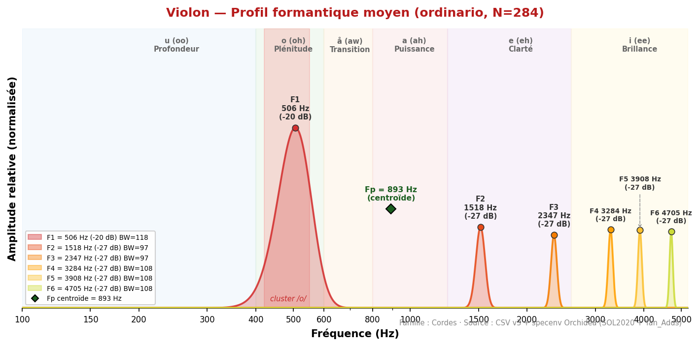
◆ Fp (centroïde) = 893 Hz
| Registre | N | Notes | F1 Hz | dB | F2 Hz | dB | F3 Hz | dB | F4 Hz | dB | F5 Hz | dB | F6 Hz | dB | F7 Hz | dB | Fp Hz |
|---|---|---|---|---|---|---|---|---|---|---|---|---|---|---|---|---|---|
| Grave | 18 | G3-C4 | 463 | -14.2 | 904 | -18.5 | 2606 | -17.1 | 3036 | -17.8 | 3413 | -17.0 | 3833 | -16.1 | 4264 | -10.4 | 883 |
| Médium | 84 | C4-C5 | 366 | -15.6 | 904 | -18.9 | 2261 | -21.9 | 2606 | -18.4 | 3025 | -19.7 | 3801 | -19.1 | 4242 | -14.2 | 881 |
| Aigu | 120 | C5-C6 | 355 | -21.4 | 560 | -17.8 | 915 | -23.8 | 2606 | -22.7 | 3025 | -23.1 | 3801 | -23.7 | 4221 | -18.1 | 793 |
| Suraigu | 83 | C6-E7 | 398 | -20.8 | 517 | -20.7 | 926 | -23.1 | 1561 | -25.1 | 2218 | -23.6 | 3747 | -24.9 | 4177 | -21.1 | 915 |
| GLOBAL | 305 | G3-E7 | 377 | -19.4 | 538 | -19.0 | 915 | -22.0 | 2595 | -22.2 | 3025 | -22.5 | 3790 | -22.5 | 4210 | -17.7 | 858 |
Grave
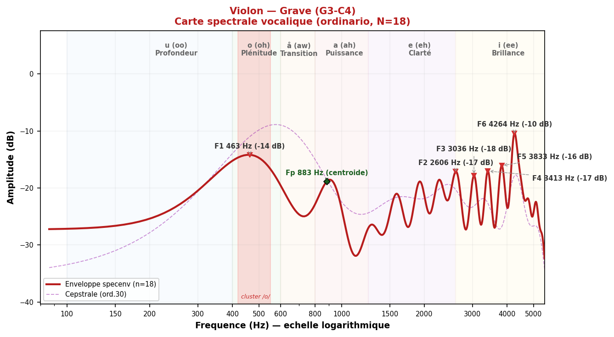
Médium
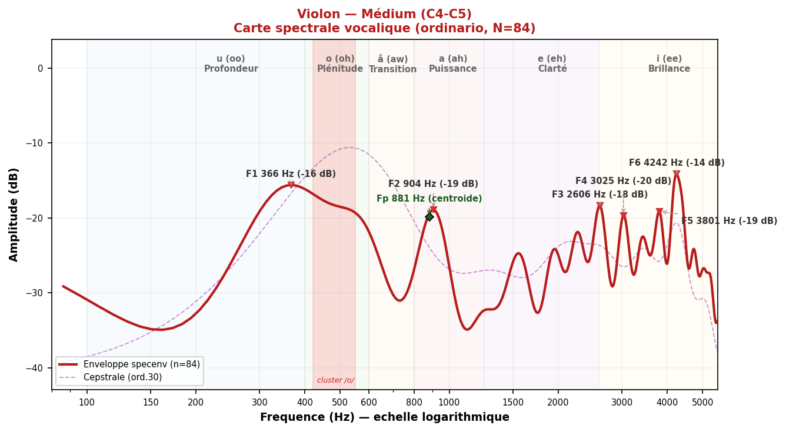
Aigu
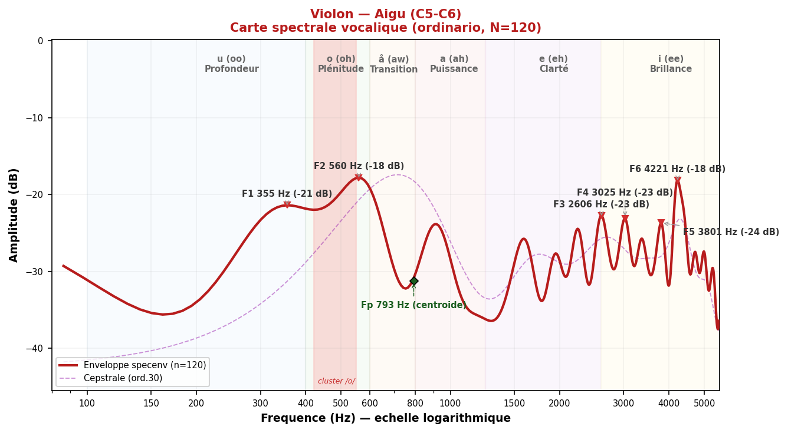
Suraigu
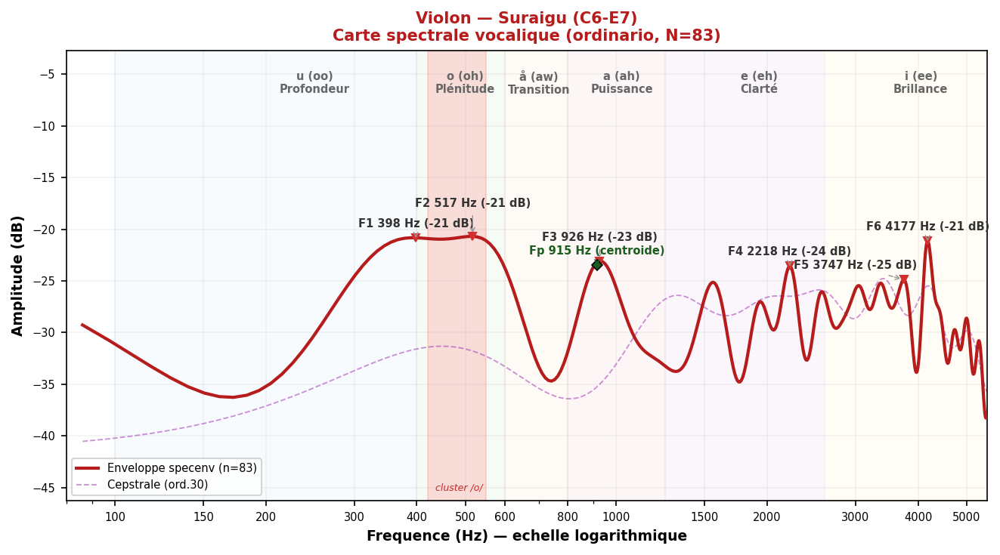
Global (toute la tessiture)
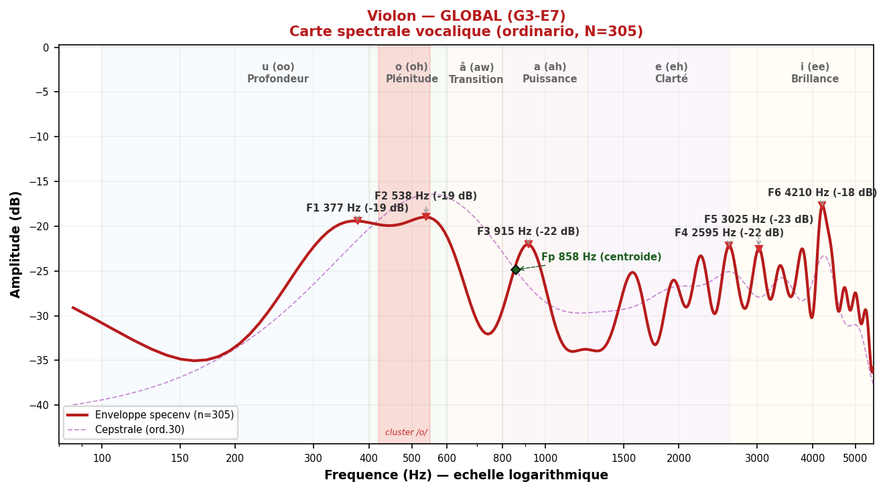
| Source | F1 (Hz) | F2 (Hz) | F3 (Hz) | F4 (Hz) | Voyelle | N | Accord |
|---|---|---|---|---|---|---|---|
| Backus (1969) | ~2 000–3 000 | — | — | — | — | — | — |
| Giesler (1985) | 1 000–1 200 | ~2 400 | — | — | e-ähnlich | — | ~ |
| Meyer (2009) | ~800–1 200 (Hauptformant) | ~2 800–3 400 | — | — | e (eh) | — | ~ |
| SOL2020 | 506 ±235 | 1 518 ±651 | 2 532 | 3 478 | (variable) | 41 | — |
| SOL2020 Fp | 893 ±92 (Fp) | — | — | — | a (ah) | 284 | ~ |
| Technique | N | F1 | F2 | F3 | F4 | F5 | F6 |
|---|---|---|---|---|---|---|---|
| artificial_harmonic | 49 | 377 | 894 | 1 626 | 2 379 | 3 488 | 4 242 |
| artificial_harmonic_tremolo | 46 | 366 | 926 | 1 981 | 2 476 | 3 542 | 4 274 |
| behind_the_bridge | 7 | 538 | 1 152 | 2 240 | 3 068 | 3 381 | 5 050 |
| behind_the_fingerboard | 1 | 484 | 872 | 1 120 | 1 766 | 3 618 | 5 243 |
| chromatic_scale | 2 | 528 | 904 | 1 529 | 1 916 | 2 261 | 3 747 |
| col_legno_battuto | 63 | 398 | 883 | 1 518 | 2 132 | 2 928 | 4 027 |
| col_legno_tratto | 61 | 377 | 818 | 1 357 | 2 110 | 2 627 | 4 005 |
| crescendo | 44 | 592 | 1 432 | 2 369 | 3 133 | 3 930 | 4 716 |
| crescendo_to_decrescendo | 60 | 420 | 1 023 | 2 218 | 2 810 | 3 833 | 4 576 |
| crushed_to_ordinario | 54 | 366 | 829 | 1 873 | 2 347 | 3 456 | 4 220 |
| ↳ σ / [Q25–Q75] | σ=287 [344–560] IQR=215 | σ=469 [592–1087] IQR=495 | σ=687 [980–2218] IQR=1238 | σ=525 | σ=729 | σ=595 | |
| decrescendo | 40 | 517 | 1 497 | 2 358 | 3 413 | 4 059 | 4 931 |
| hit_on_body | 4 | 398 | 851 | 1 335 | 1 744 | 1 464 | 1 776 |
| natural_harmonics_glissandi | 24 | 1 550 | 2 003 | 2 541 | 3 036 | 3 402 | 4 242 |
| non_vibrato | 249 | 409 | 990 | 2 229 | 3 079 | 3 898 | 4 436 |
| ↳ σ / [Q25–Q75] | σ=210 [366–549] IQR=183 | σ=588 [904–1766] IQR=861 | σ=620 [1647–2606] IQR=958 | σ=551 | σ=466 | σ=606 | |
| note_lasting | 57 | 517 | 1 324 | 2 229 | 2 961 | 3 833 | 4 425 |
| on_the_tailpiece | 1 | 366 | 711 | 1 303 | 1 776 | 3 833 | 5 631 |
| on_the_tuning_pegs | 4 | 431 | 861 | 1 335 | 1 658 | 1 970 | 3 585 |
| ordinario | 284 | 506 | 1 518 | 2 347 | 3 284 | 3 908 | 4 705 |
| ↳ σ / [Q25–Q75] | σ=376 [398–614] IQR=215 | σ=651 [926–1970] IQR=1044 | σ=616 [1938–2778] IQR=840 | σ=602 | σ=559 | σ=602 | |
| ordinario_to_crushed | 58 | 355 | 808 | 1 507 | 2 369 | 3 499 | 4 210 |
| ↳ σ / [Q25–Q75] | σ=319 [344–398] IQR=54 | σ=418 [581–958] IQR=377 | σ=650 [948–2132] IQR=1184 | σ=458 | σ=557 | σ=360 | |
| ordinario_to_sul_ponticello | 43 | 388 | 894 | 2 078 | 2 799 | 3 714 | 4 414 |
| ↳ σ / [Q25–Q75] | σ=111 [355–441] IQR=86 | σ=505 [646–1421] IQR=775 | σ=611 [1249–2250] IQR=1001 | σ=579 | σ=665 | σ=784 | |
| ordinario_to_sul_tasto | 55 | 441 | 1 066 | 2 229 | 2 756 | 3 768 | 4 468 |
| ↳ σ / [Q25–Q75] | σ=311 [377–549] IQR=172 | σ=553 [915–1680] IQR=764 | σ=635 [1626–2606] IQR=980 | σ=606 | σ=740 | σ=662 | |
| ordinario_to_tremolo | 46 | 420 | 1 174 | 2 164 | 2 950 | 3 725 | 4 684 |
| ↳ σ / [Q25–Q75] | σ=248 [355–689] IQR=334 | σ=572 [797–1669] IQR=872 | σ=676 [1680–2649] IQR=969 | σ=657 | σ=784 | σ=731 | |
| pizzicato_bartok | 53 | 431 | 851 | 1 400 | 2 100 | 3 198 | 4 253 |
| pizzicato_l_vib | 243 | 409 | 851 | 1 270 | 1 787 | 2 498 | 3 542 |
| pizzicato_secco | 189 | 388 | 764 | 1 195 | 1 776 | 2 390 | 3 456 |
| sforzato | 100 | 452 | 1 174 | 2 218 | 2 907 | 4 038 | 4 737 |
| staccato | 60 | 474 | 1 098 | 2 207 | 3 122 | 3 919 | 4 565 |
| sul_ponticello | 58 | 388 | 937 | 2 196 | 2 939 | 3 833 | 4 360 |
| sul_ponticello_to_ordinario | 46 | 409 | 1 001 | 2 347 | 2 961 | 3 801 | 4 447 |
| ↳ σ / [Q25–Q75] | σ=223 [366–549] IQR=183 | σ=644 [915–1981] IQR=1066 | σ=680 [1992–2616] IQR=625 | σ=579 | σ=651 | σ=704 | |
| sul_ponticello_to_sul_tasto | 37 | 377 | 926 | 2 100 | 2 810 | 3 736 | 4 479 |
| sul_ponticello_tremolo | 58 | 603 | 1 572 | 2 358 | 2 950 | 3 801 | 4 371 |
| sul_tasto | 50 | 517 | 1 012 | 2 164 | 2 616 | 3 510 | 4 242 |
| sul_tasto_to_ordinario | 52 | 431 | 1 120 | 2 110 | 2 832 | 3 854 | 4 468 |
| ↳ σ / [Q25–Q75] | σ=169 [388–549] IQR=162 | σ=484 [872–1594] IQR=721 | σ=580 [1895–2369] IQR=474 | σ=728 | σ=779 | σ=867 | |
| sul_tasto_to_sul_ponticello | 52 | 398 | 948 | 2 196 | 2 778 | 3 801 | 4 436 |
| tremolo | 285 | 495 | 1 163 | 2 100 | 2 928 | 3 747 | 4 404 |
| tremolo_to_ordinario | 41 | 495 | 1 389 | 2 293 | 3 122 | 3 876 | 4 651 |
| ↳ σ / [Q25–Q75] | σ=359 [366–829] IQR=463 | σ=532 [840–1669] IQR=829 | σ=680 [1981–2616] IQR=635 | σ=641 | σ=730 | σ=712 | |
| trill_major_second_up | 61 | 528 | 1 120 | 2 186 | 2 487 | 3 682 | 4 296 |
| trill_minor_second_up | 63 | 484 | 1 270 | 2 143 | 2 649 | 3 585 | 4 274 |
| Instrument associé | F1 (instrument) | F1 (associé) | Écart | Qualité | Rapport de tessiture | Commentaire |
|---|---|---|---|---|---|---|
| Hautbois | 1 253 (Fp) | 1 393 (Fp) | Δ=140 Hz | Bonne | Unisson | Doublure Fp : Violon Fp=1 253, Hautbois Fp=1 393 — zone /a/ partagée |
| Flûte | 1 253 (Fp) | 1 352 (Fp) | Δ=99 Hz | Bonne | Unisson | Doublure Fp : Violon Fp=1 253, Flûte Fp=1 352 — enrichissement aigu |
| Clarinette Sib | 1 253 (Fp) | 1 296 (Fp) | Δ=43 Hz | Excellente | Unisson | Doublure Fp : Violon Fp=1 253, Cl.Sib Fp=1 296 — zone /a/ commune |
| Trompette | 1 253 (Fp) | 1 048 (Fp) | Δ=205 Hz | Complémentaire | Octave | Trompette sonne généralement une octave au-dessus |
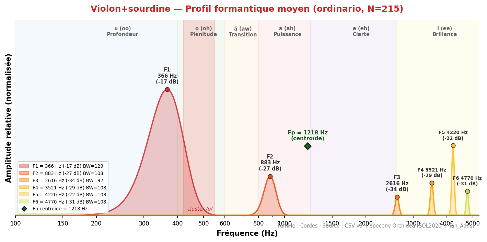
◆ Fp (centroïde) = 1218 Hz
| Technique | N | F1 | F2 | F3 | F4 | F5 | F6 |
|---|---|---|---|---|---|---|---|
| non_vibrato | 206 | 366 | 840 | 2 304 | 3 478 | 4 199 | 4 716 |
| ↳ σ / [Q25–Q75] | σ=46 [334–388] IQR=54 | σ=557 [635–948] IQR=312 | σ=883 [1561–3101] IQR=1540 | σ=593 | σ=420 | σ=525 | |
| ordinario | 215 | 366 | 883 | 2 616 | 3 521 | 4 220 | 4 770 |
| ↳ σ / [Q25–Q75] | σ=129 [344–388] IQR=43 | σ=658 [678–1001] IQR=323 | σ=824 [1647–3112] IQR=1464 | σ=533 | σ=394 | σ=501 | |
| tremolo | 193 | 366 | 851 | 1 733 | 3 165 | 3 973 | 4 640 |
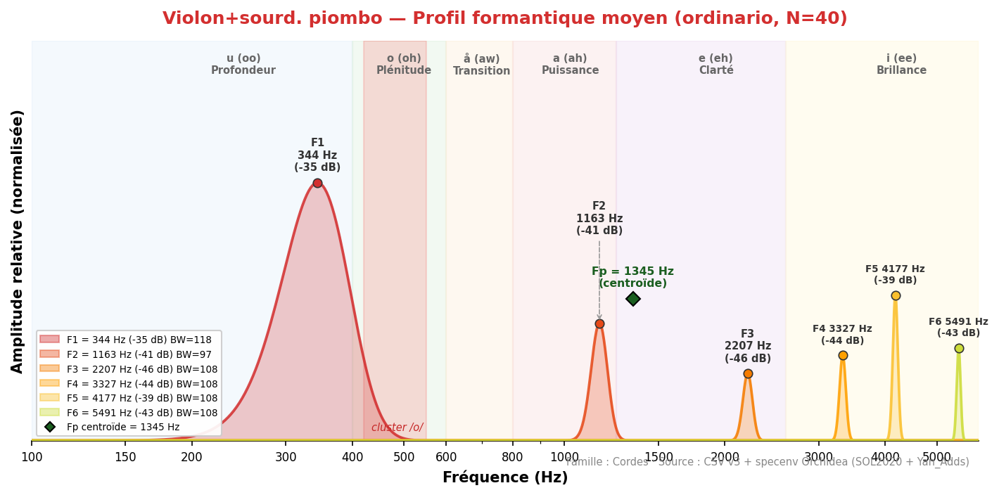
◆ Fp (centroïde) = 1345 Hz
| Technique | N | F1 | F2 | F3 | F4 | F5 | F6 |
|---|---|---|---|---|---|---|---|
| non_vibrato | 40 | 344 | 1 314 | 2 358 | 3 456 | 4 145 | 5 545 |
| ↳ σ / [Q25–Q75] | σ=322 [312–668] IQR=355 | σ=473 [915–1669] IQR=754 | σ=804 [1604–2907] IQR=1303 | σ=916 | σ=998 | σ=980 | |
| ordinario | 40 | 344 | 1 163 | 2 207 | 3 327 | 4 177 | 5 491 |
| ↳ σ / [Q25–Q75] | σ=373 [312–668] IQR=355 | σ=483 [937–1626] IQR=689 | σ=786 [1701–2638] IQR=937 | σ=884 | σ=926 | σ=1090 | |
| tremolo | 42 | 441 | 1 389 | 2 229 | 3 122 | 4 156 | 4 974 |
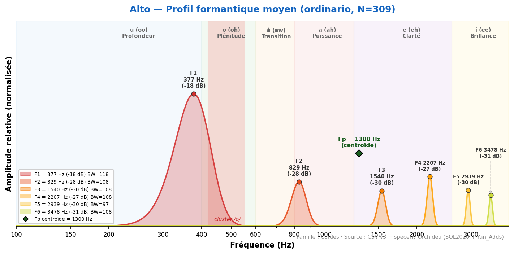
◆ Fp (centroïde) = 1300 Hz
| Registre | N | Notes | F1 Hz | dB | F2 Hz | dB | F3 Hz | dB | F4 Hz | dB | F5 Hz | dB | F6 Hz | dB | F7 Hz | dB | Fp Hz |
|---|---|---|---|---|---|---|---|---|---|---|---|---|---|---|---|---|---|
| Grave | 27 | C3-G3 | 366 | -13.7 | 721 | -20.1 | 1098 | -21.0 | 1486 | -22.0 | 1798 | -24.4 | 2143 | -17.3 | 3047 | -20.9 | 1240 |
| Médium | 96 | G3-G4 | 334 | -14.3 | 700 | -23.7 | 1109 | -24.4 | 1453 | -25.4 | 2099 | -22.4 | 2369 | -23.9 | 3101 | -23.8 | 1246 |
| Aigu | 129 | G4-G5 | 398 | -18.4 | 754 | -26.7 | 1464 | -30.3 | 2067 | -26.7 | 2358 | -29.6 | 2789 | -29.6 | 3101 | -26.3 | 1181 |
| Suraigu | 81 | G5-C7 | 366 | -21.4 | 797 | -23.0 | 1098 | -27.9 | 1593 | -31.5 | 1981 | -27.4 | 2476 | -29.8 | 3101 | -26.2 | 1032 |
| GLOBAL | 333 | C3-C7 | 366 | -18.1 | 743 | -25.0 | 1109 | -27.3 | 1475 | -28.7 | 2078 | -25.4 | 2401 | -28.1 | 3101 | -25.2 | 1180 |
Grave
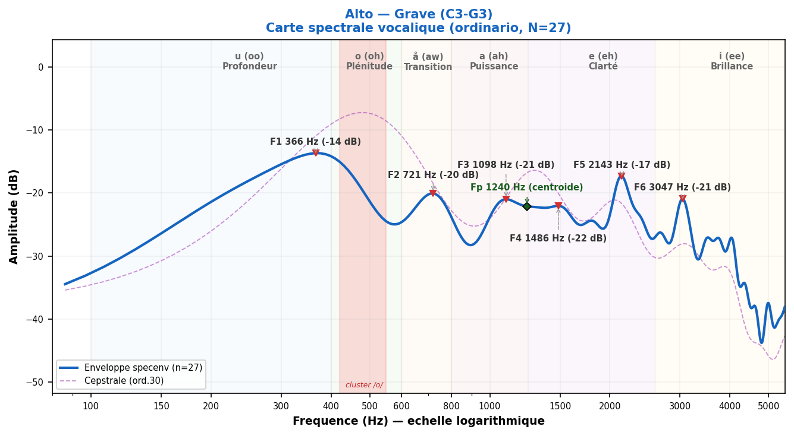
Médium
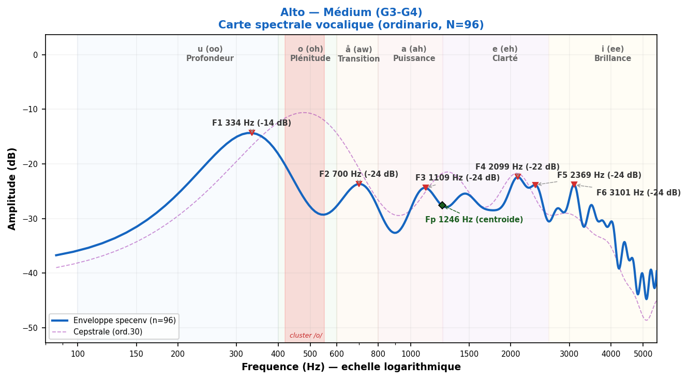
Aigu
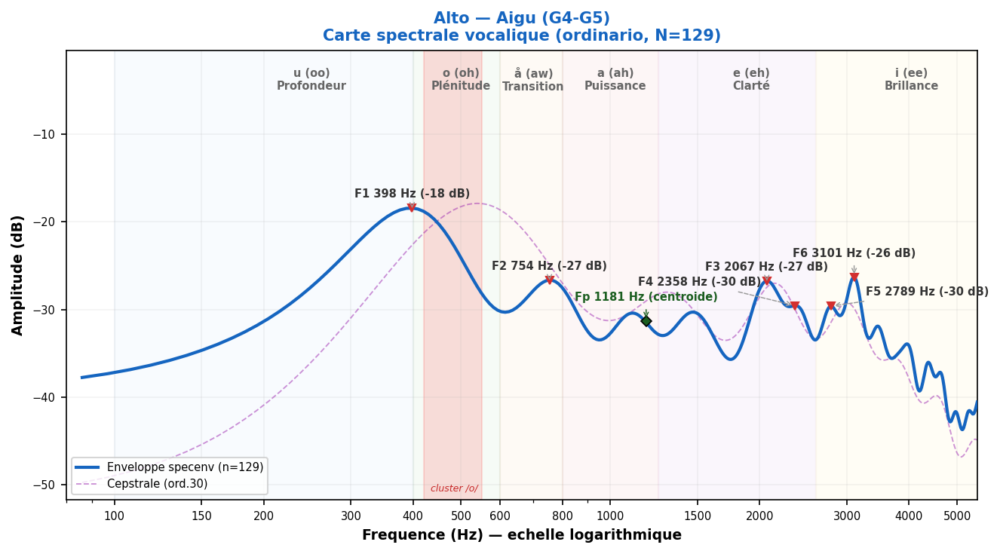
Suraigu
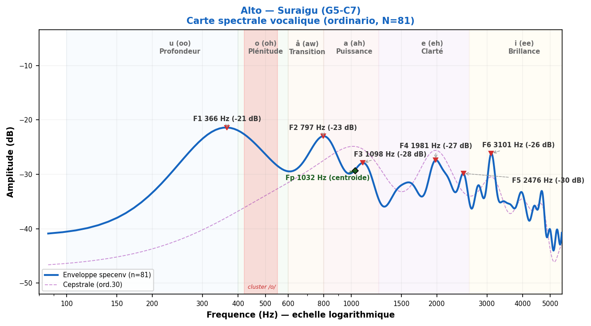
Global (toute la tessiture)
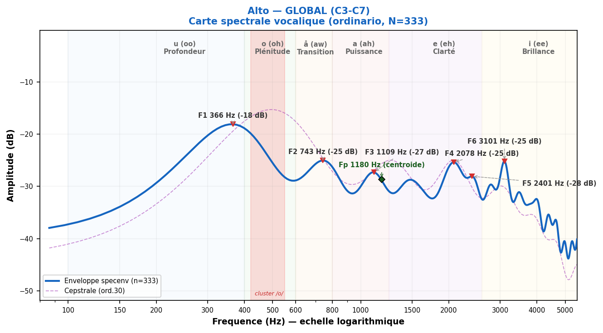
| Source | F1 (Hz) | F2 (Hz) | F3 (Hz) | F4 (Hz) | Voyelle | N | Accord |
|---|---|---|---|---|---|---|---|
| Giesler (1985) | 220–600 | — | — | — | registre-dépendant | — | ~ |
| Meyer (2009) | ~400–600 | ~800–1 200 | — | — | o–a | — | ~ |
| SOL2020 | 377 ±14 | 766 ±217 | 1 282 | 1 957 | å/a | 35 | ~ |
| Technique | N | F1 | F2 | F3 | F4 | F5 | F6 |
|---|---|---|---|---|---|---|---|
| artificial_harmonic | 53 | 377 | 743 | 1 540 | 2 175 | 2 907 | 3 510 |
| artificial_harmonic_tremolo | 54 | 366 | 743 | 1 550 | 2 218 | 2 939 | 3 521 |
| behind_the_bridge | 4 | 355 | 1 001 | 1 960 | 2 993 | 4 328 | 4 942 |
| behind_the_fingerboard | 4 | 711 | 1 314 | 2 401 | 3 327 | 3 790 | 4 888 |
| chromatic_scale | 2 | 388 | 732 | 1 044 | 1 529 | 2 121 | 3 155 |
| col_legno_battuto | 64 | 377 | 754 | 1 303 | 1 755 | 2 218 | 3 090 |
| col_legno_tratto | 64 | 355 | 732 | 1 443 | 2 078 | 2 433 | 3 144 |
| crescendo | 48 | 377 | 808 | 1 604 | 2 153 | 2 746 | 3 488 |
| crescendo_to_decrescendo | 64 | 377 | 775 | 1 572 | 2 207 | 2 821 | 3 413 |
| crushed_to_ordinario | 64 | 344 | 754 | 1 098 | 1 744 | 2 304 | 3 090 |
| ↳ σ / [Q25–Q75] | σ=70 [323–377] IQR=54 | σ=223 [711–840] IQR=129 | σ=374 [1023–1260] IQR=237 | σ=442 | σ=458 | σ=520 | |
| decrescendo | 48 | 388 | 872 | 1 669 | 2 369 | 3 133 | 3 865 |
| hit_on_body | 5 | 237 | 603 | 1 055 | 1 367 | 1 723 | 1 949 |
| natural_harmonics_glissandi | 24 | 409 | 1 464 | 1 927 | 2 196 | 2 821 | 3 144 |
| non_vibrato | 297 | 366 | 754 | 1 400 | 2 110 | 2 788 | 3 445 |
| ↳ σ / [Q25–Q75] | σ=92 [334–398] IQR=65 | σ=285 [700–1034] IQR=334 | σ=417 [1109–1755] IQR=646 | σ=514 | σ=645 | σ=879 | |
| note_lasting | 52 | 388 | 786 | 1 540 | 2 207 | 2 638 | 3 359 |
| on_the_bridge | 1 | 366 | 711 | 1 034 | 1 314 | 1 927 | 3 133 |
| on_the_frog | 1 | 215 | 689 | 1 023 | 1 755 | 2 100 | 4 317 |
| on_the_tuning_pegs | 4 | 334 | 1 077 | 1 572 | 1 992 | 3 392 | 5 060 |
| ordinario | 309 | 377 | 829 | 1 540 | 2 207 | 2 939 | 3 478 |
| ↳ σ / [Q25–Q75] | σ=202 [334–420] IQR=86 | σ=416 [721–1163] IQR=441 | σ=506 [1227–1970] IQR=743 | σ=598 | σ=728 | σ=1004 | |
| ordinario_to_crushed | 48 | 334 | 732 | 1 077 | 1 906 | 2 250 | 3 112 |
| ↳ σ / [Q25–Q75] | σ=35 [323–355] IQR=32 | σ=70 [700–786] IQR=86 | σ=252 [1012–1130] IQR=118 | σ=298 | σ=366 | σ=408 | |
| ordinario_to_sul_ponticello | 52 | 377 | 743 | 1 604 | 2 196 | 2 778 | 3 338 |
| ↳ σ / [Q25–Q75] | σ=106 [334–398] IQR=65 | σ=359 [689–1001] IQR=312 | σ=484 [1109–1960] IQR=850 | σ=506 | σ=506 | σ=715 | |
| ordinario_to_sul_tasto | 64 | 355 | 764 | 1 507 | 2 110 | 2 853 | 3 359 |
| ↳ σ / [Q25–Q75] | σ=92 [323–409] IQR=86 | σ=371 [689–1055] IQR=366 | σ=484 [1098–1787] IQR=689 | σ=550 | σ=588 | σ=744 | |
| ordinario_to_tremolo | 48 | 377 | 829 | 1 443 | 2 067 | 2 627 | 3 176 |
| ↳ σ / [Q25–Q75] | σ=133 [334–452] IQR=118 | σ=246 [743–1034] IQR=291 | σ=447 [1098–1960] IQR=861 | σ=624 | σ=775 | σ=1004 | |
| pizzicato_bartok | 57 | 302 | 581 | 1 077 | 1 529 | 2 358 | 3 133 |
| pizzicato_l_vib | 192 | 302 | 678 | 1 087 | 1 540 | 2 153 | 3 047 |
| pizzicato_secco | 156 | 291 | 668 | 1 087 | 1 529 | 2 121 | 2 799 |
| sforzato | 96 | 377 | 980 | 1 594 | 2 336 | 3 144 | 3 811 |
| staccato | 64 | 366 | 861 | 1 626 | 2 336 | 2 821 | 3 413 |
| sul_ponticello | 95 | 366 | 754 | 1 497 | 2 196 | 2 928 | 3 467 |
| sul_ponticello_to_ordinario | 64 | 377 | 775 | 1 604 | 2 196 | 2 950 | 3 348 |
| ↳ σ / [Q25–Q75] | σ=114 [334–409] IQR=75 | σ=349 [711–1055] IQR=344 | σ=470 [1141–1970] IQR=829 | σ=526 | σ=599 | σ=886 | |
| sul_ponticello_to_sul_tasto | 49 | 377 | 808 | 1 647 | 2 229 | 2 907 | 3 338 |
| sul_ponticello_tremolo | 95 | 366 | 851 | 1 540 | 2 207 | 2 788 | 3 348 |
| sul_tasto | 95 | 366 | 754 | 1 324 | 2 078 | 2 638 | 3 155 |
| sul_tasto_to_ordinario | 52 | 377 | 743 | 1 464 | 2 186 | 2 821 | 3 305 |
| ↳ σ / [Q25–Q75] | σ=96 [323–398] IQR=75 | σ=284 [700–980] IQR=280 | σ=418 [1087–1852] IQR=764 | σ=493 | σ=624 | σ=922 | |
| sul_tasto_to_sul_ponticello | 52 | 377 | 764 | 1 529 | 2 250 | 2 950 | 3 445 |
| sul_tasto_tremolo | 95 | 366 | 754 | 1 227 | 1 970 | 2 476 | 3 144 |
| tremolo | 309 | 366 | 775 | 1 357 | 2 013 | 2 649 | 3 273 |
| tremolo_to_ordinario | 48 | 366 | 797 | 1 454 | 2 207 | 3 068 | 3 478 |
| ↳ σ / [Q25–Q75] | σ=150 [334–463] IQR=129 | σ=350 [711–1077] IQR=366 | σ=554 [1109–2056] IQR=947 | σ=749 | σ=940 | σ=1165 | |
| trill_major_second_up | 64 | 420 | 808 | 1 454 | 2 121 | 2 799 | 3 208 |
| trill_minor_second_up | 64 | 409 | 883 | 1 529 | 2 143 | 2 788 | 3 165 |
| Instrument associé | F1 (instrument) | F1 (associé) | Écart | Qualité | Rapport de tessiture | Commentaire |
|---|---|---|---|---|---|---|
| Cor anglais | 377 | 452 | Δ=75 Hz | Bonne | Unisson | Zone /o/–/å/ — couleur mélancolique |
| Clarinette basse | 377 | 323 | Δ=54 Hz | Excellente | Octave | Clarinette basse sonne environ une octave en dessous |
| Cor | 377 | 388 | Δ=11 Hz | Quasi-parfaite | Unisson | Convergence /o/–/å/ — couleur sombre commune |
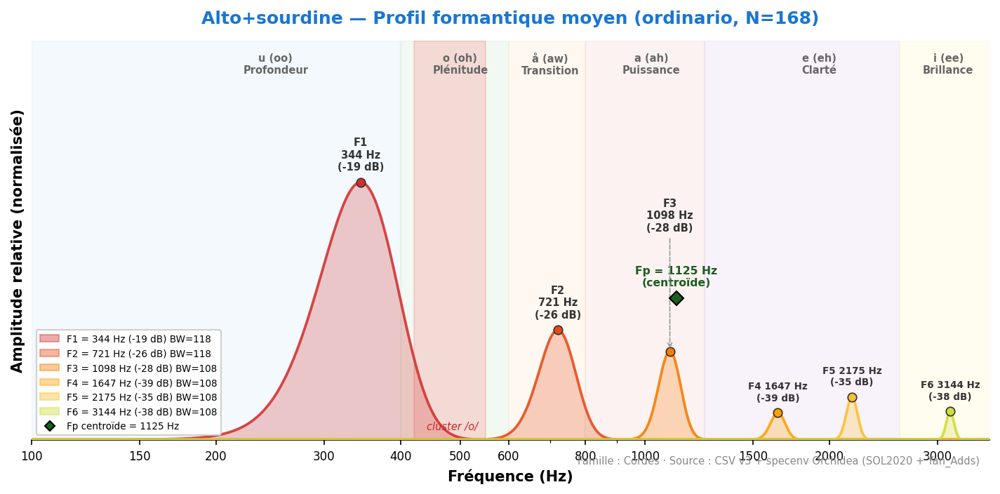
◆ Fp (centroïde) = 1125 Hz
| Technique | N | F1 | F2 | F3 | F4 | F5 | F6 |
|---|---|---|---|---|---|---|---|
| non_vibrato | 156 | 334 | 711 | 1 077 | 1 604 | 2 153 | 2 972 |
| ↳ σ / [Q25–Q75] | σ=60 [291–366] IQR=75 | σ=132 [624–754] IQR=129 | σ=346 [1034–1227] IQR=194 | σ=546 | σ=933 | σ=1319 | |
| ordinario | 168 | 344 | 721 | 1 098 | 1 647 | 2 175 | 3 144 |
| ↳ σ / [Q25–Q75] | σ=134 [302–398] IQR=97 | σ=327 [689–840] IQR=151 | σ=611 [1034–1367] IQR=334 | σ=844 | σ=1131 | σ=1379 | |
| tremolo | 56 | 344 | 732 | 1 098 | 1 636 | 2 196 | 3 101 |
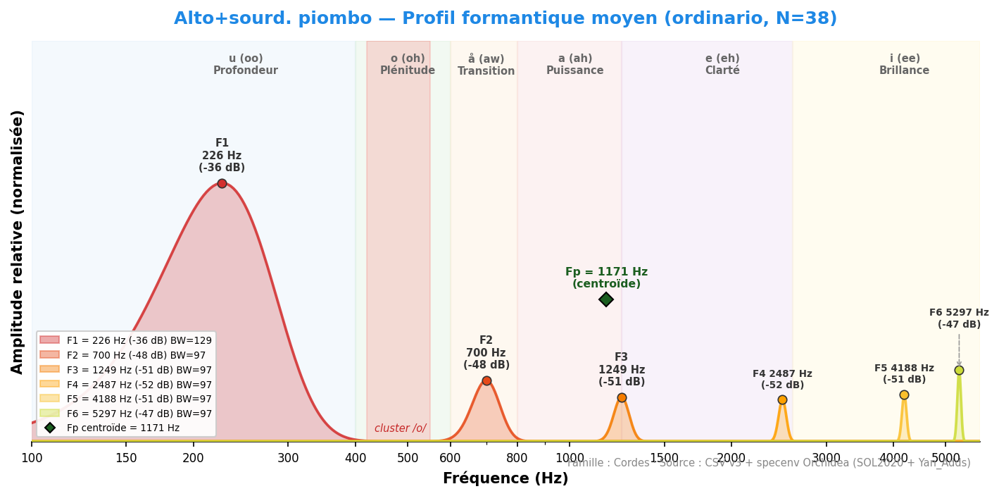
◆ Fp (centroïde) = 1171 Hz
| Technique | N | F1 | F2 | F3 | F4 | F5 | F6 |
|---|---|---|---|---|---|---|---|
| non_vibrato | 36 | 215 | 571 | 1 077 | 1 787 | 3 133 | 5 254 |
| ↳ σ / [Q25–Q75] | σ=39 [183–237] IQR=54 | σ=190 [517–818] IQR=302 | σ=400 [894–1410] IQR=517 | σ=644 | σ=970 | σ=948 | |
| ordinario | 38 | 226 | 700 | 1 249 | 2 487 | 4 188 | 5 297 |
| ↳ σ / [Q25–Q75] | σ=131 [183–248] IQR=65 | σ=273 [549–872] IQR=323 | σ=553 [980–1970] IQR=990 | σ=840 | σ=1050 | σ=936 | |
| tremolo | 43 | 215 | 743 | 1 174 | 2 326 | 3 305 | 4 694 |
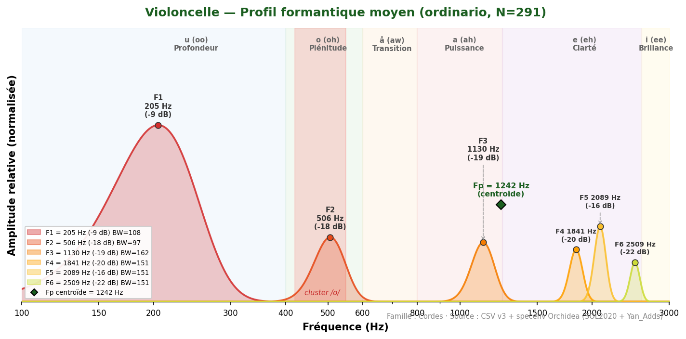
◆ Fp (centroïde) = 1242 Hz
| Registre | N | Notes | F1 Hz | dB | F2 Hz | dB | F3 Hz | dB | F4 Hz | dB | F5 Hz | dB | F6 Hz | dB | F7 Hz | dB | Fp Hz |
|---|---|---|---|---|---|---|---|---|---|---|---|---|---|---|---|---|---|
| Grave | 27 | C2-G2 | 194 | 2.7 | 484 | -7.9 | 851 | -16.2 | 1109 | -12.7 | 1475 | -19.1 | 1938 | -14.8 | 2498 | -21.1 | 973 |
| Médium | 96 | G2-G3 | 194 | -3.3 | 474 | -14.0 | 1120 | -14.3 | 1507 | -19.4 | 2089 | -13.8 | 2476 | -19.8 | 3801 | -22.6 | 1021 |
| Aigu | 117 | G3-G4 | 237 | -9.6 | 1130 | -18.6 | 1507 | -22.6 | 2089 | -17.0 | 2466 | -21.2 | 2799 | -23.8 | 3822 | -22.7 | 1021 |
| Suraigu | 72 | G4-C6 | 205 | -17.7 | 409 | -16.0 | 1141 | -24.5 | 2046 | -18.6 | 2444 | -25.1 | 2735 | -24.6 | 3822 | -24.8 | 997 |
| GLOBAL | 312 | C2-C6 | 205 | -8.7 | 1130 | -18.2 | 1507 | -22.0 | 2067 | -16.4 | 2466 | -21.7 | 2789 | -24.5 | 3811 | -23.5 | 1013 |
Grave
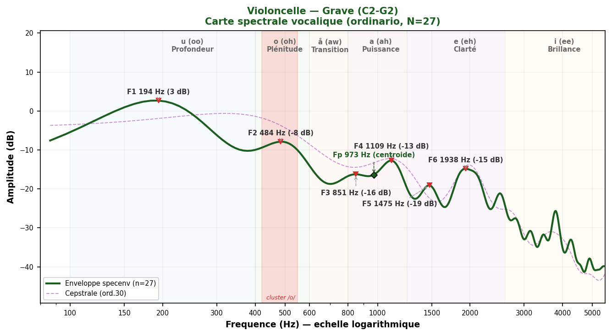
Médium
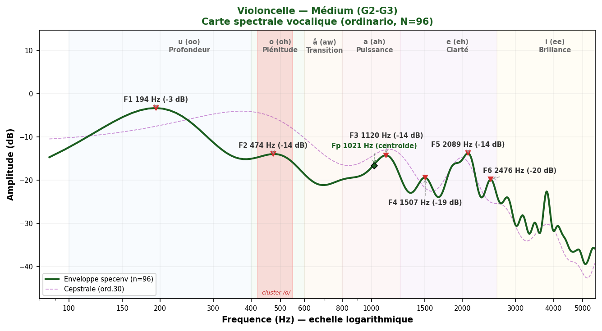
Aigu
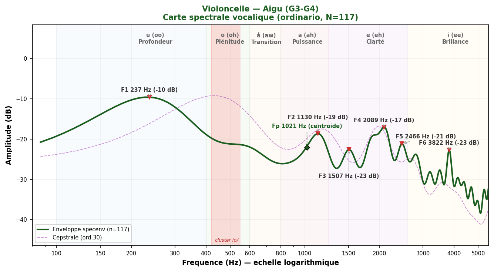
Suraigu
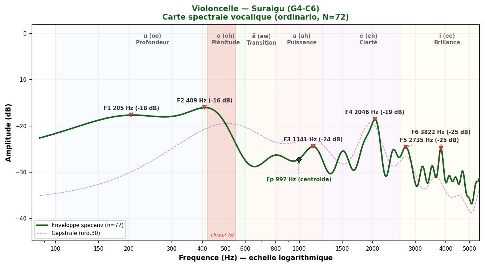
Global (toute la tessiture)
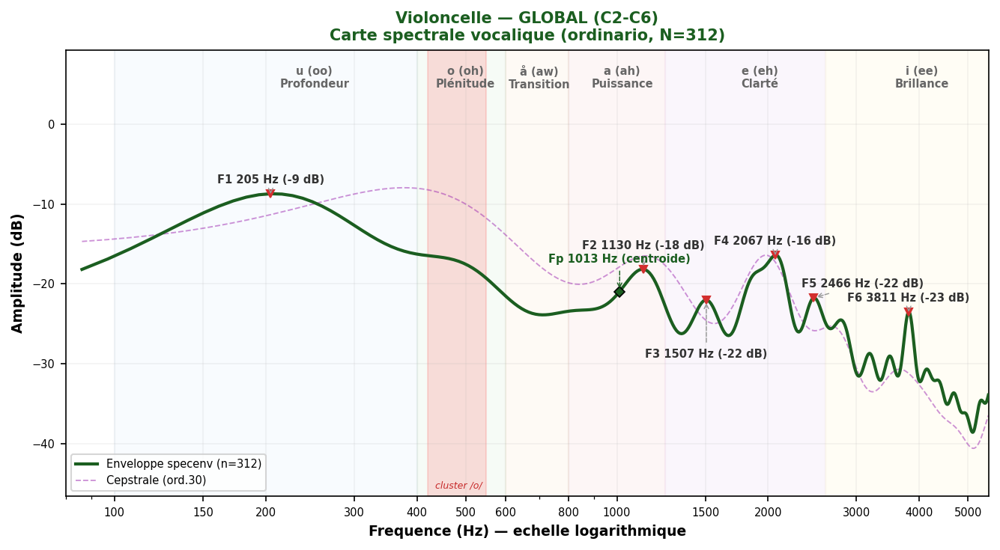
| Source | F1 (Hz) | F2 (Hz) | F3 (Hz) | F4 (Hz) | Voyelle | N | Accord |
|---|---|---|---|---|---|---|---|
| Backus (1969) | 600–900 | — | — | — | — | — | ~ |
| Giesler (1985) | 300–500 | — | — | — | o-ähnlich | — | ✓ |
| Meyer (2009) | ~500 (Hauptformant) | — | — | — | o (oh) | — | ✓ |
| Yan_Adds (autre pipeline) | 499 ±155 | 1 304 ±576 | 2 317 | — | o (oh) | 158 | note |
| Pipeline v22 | 205 | 506 | — | — | u (oo) | 309 | réf. |
| Technique | N | F1 | F2 | F3 | F4 | F5 | F6 |
|---|---|---|---|---|---|---|---|
| artificial_harmonic | 45 | 269 | 614 | 1 087 | 1 723 | 2 067 | 2 627 |
| artificial_harmonic_tremolo | 45 | 183 | 592 | 1 174 | 1 776 | 2 046 | 2 638 |
| behind_the_bridge | 4 | 269 | 581 | 937 | 1 260 | 1 798 | 2 412 |
| chromatic_scale | 2 | 205 | 754 | 1 087 | 1 486 | 2 035 | 2 067 |
| col_legno_battuto | 45 | 172 | 484 | 915 | 1 314 | 1 830 | 2 358 |
| col_legno_tratto | 45 | 205 | 829 | 1 141 | 1 540 | 1 981 | 2 401 |
| crescendo | 32 | 226 | 614 | 1 141 | 1 863 | 2 207 | 2 562 |
| crescendo_to_decrescendo | 39 | 205 | 528 | 1 087 | 1 798 | 2 240 | 2 670 |
| crushed_to_ordinario | 39 | 205 | 474 | 1 034 | 1 475 | 1 992 | 2 606 |
| ↳ σ / [Q25–Q75] | σ=12 [194–215] IQR=22 | σ=107 [441–495] IQR=54 | σ=277 [775–1152] IQR=377 | σ=398 | σ=372 | σ=401 | |
| decrescendo | 31 | 258 | 657 | 1 152 | 1 938 | 2 315 | 2 649 |
| hit_on_body | 5 | 215 | 678 | 969 | — | — | — |
| natural_harmonics_glissandi | 24 | 258 | 549 | 1 077 | 1 507 | 2 003 | 2 433 |
| non_vibrato | 279 | 194 | 495 | 1 087 | 1 529 | 2 078 | 2 476 |
| ↳ σ / [Q25–Q75] | σ=61 [183–269] IQR=86 | σ=230 [452–646] IQR=194 | σ=335 [883–1195] IQR=312 | σ=472 | σ=585 | σ=1022 | |
| note_lasting | 35 | 205 | 538 | 1 098 | 1 540 | 2 056 | 2 552 |
| on_the_bridge | 1 | 194 | 474 | 1 130 | 1 529 | 1 841 | 2 089 |
| on_the_frog | 1 | 388 | 700 | 1 227 | 1 594 | 3 252 | 4 877 |
| on_the_tailpiece | 1 | 269 | 603 | 872 | 1 335 | 1 755 | 4 059 |
| on_the_tuning_pegs | 4 | 302 | 1 141 | 1 464 | 1 766 | 3 348 | 5 039 |
| ordinario | 291 | 205 | 506 | 1 130 | 1 841 | 2 089 | 2 509 |
| ↳ σ / [Q25–Q75] | σ=287 [183–291] IQR=108 | σ=495 [463–1055] IQR=592 | σ=565 [1055–1561] IQR=506 | σ=697 | σ=855 | σ=1180 | |
| ordinario_to_crushed | 28 | 205 | 506 | 1 141 | 1 518 | 2 046 | 2 519 |
| ↳ σ / [Q25–Q75] | σ=66 [205–248] IQR=43 | σ=222 [463–797] IQR=334 | σ=353 [990–1292] IQR=302 | σ=412 | σ=370 | σ=382 | |
| ordinario_to_sul_ponticello | 35 | 205 | 517 | 1 077 | 1 647 | 2 110 | 2 466 |
| ↳ σ / [Q25–Q75] | σ=72 [183–269] IQR=86 | σ=309 [452–1012] IQR=560 | σ=340 [1001–1561] IQR=560 | σ=380 | σ=311 | σ=436 | |
| ordinario_to_sul_tasto | 37 | 215 | 678 | 1 400 | 1 873 | 2 229 | 2 606 |
| ↳ σ / [Q25–Q75] | σ=103 [183–312] IQR=129 | σ=372 [484–1098] IQR=614 | σ=416 [1055–1572] IQR=517 | σ=441 | σ=432 | σ=534 | |
| ordinario_to_tremolo | 32 | 215 | 484 | 1 141 | 1 755 | 2 153 | 2 562 |
| ↳ σ / [Q25–Q75] | σ=132 [205–420] IQR=215 | σ=239 [463–808] IQR=344 | σ=288 [958–1314] IQR=355 | σ=438 | σ=426 | σ=858 | |
| pizzicato_bartok | 45 | 237 | 538 | 1 012 | 1 410 | 1 820 | 2 638 |
| pizzicato_l_vib | 135 | 183 | 474 | 969 | 1 260 | 1 852 | 2 509 |
| pizzicato_secco | 129 | 183 | 484 | 969 | 1 270 | 1 820 | 2 143 |
| sforzato | 59 | 226 | 571 | 1 130 | 1 852 | 2 326 | 2 681 |
| staccato | 39 | 205 | 506 | 1 044 | 1 507 | 1 981 | 2 498 |
| sul_ponticello | 73 | 215 | 549 | 1 109 | 1 820 | 2 089 | 2 487 |
| sul_ponticello_to_ordinario | 35 | 205 | 538 | 1 141 | 1 766 | 2 229 | 2 692 |
| ↳ σ / [Q25–Q75] | σ=72 [183–269] IQR=86 | σ=282 [441–1001] IQR=560 | σ=291 [1055–1507] IQR=452 | σ=367 | σ=260 | σ=331 | |
| sul_ponticello_to_sul_tasto | 37 | 205 | 495 | 1 152 | 1 583 | 2 078 | 2 476 |
| sul_ponticello_tremolo | 73 | 183 | 517 | 1 163 | 1 809 | 2 078 | 2 444 |
| sul_tasto | 73 | 194 | 538 | 1 098 | 1 507 | 1 938 | 2 476 |
| sul_tasto_to_ordinario | 38 | 205 | 538 | 1 152 | 1 863 | 2 315 | 2 627 |
| ↳ σ / [Q25–Q75] | σ=66 [183–269] IQR=86 | σ=251 [463–743] IQR=280 | σ=260 [1044–1314] IQR=269 | σ=335 | σ=282 | σ=592 | |
| sul_tasto_to_sul_ponticello | 38 | 205 | 517 | 1 098 | 1 863 | 2 304 | 2 627 |
| sul_tasto_tremolo | 73 | 205 | 506 | 937 | 1 184 | 1 852 | 2 089 |
| tremolo | 219 | 215 | 484 | 1 066 | 1 486 | 1 884 | 2 164 |
| tremolo_to_ordinario | 31 | 258 | 560 | 1 087 | 1 669 | 2 067 | 2 487 |
| ↳ σ / [Q25–Q75] | σ=143 [205–441] IQR=237 | σ=284 [484–937] IQR=452 | σ=342 [937–1367] IQR=431 | σ=442 | σ=469 | σ=921 | |
| trill_major_second_up | 45 | 205 | 506 | 1 044 | 1 497 | 1 960 | 2 347 |
| trill_minor_second_up | 45 | 215 | 678 | 1 109 | 1 518 | 1 960 | 2 326 |
| Instrument associé | F1 (instrument) | F1 (associé) | Écart | Qualité | Rapport de tessiture | Commentaire |
|---|---|---|---|---|---|---|
| Basson | 205 | 495 | Δ=290 Hz | Complémentaire | Unisson | Basson en /o/ (495 Hz), violoncelle en /u/ (205 Hz) — complémentarité classique |
| Cor | 205 | 388 | Δ=183 Hz | Bonne | Octave | Cor en /o/ (388 Hz), violoncelle en /u/ — complémentarité /u/–/o/ |
| Trombone | 205 | 237 | Δ=32 Hz | Excellente | Octave | Trombone F1=237 Hz, violoncelle F1=205 Hz — deux instruments en /u/ |
| Cor anglais | 205 | 452 | Δ=247 Hz | Complémentaire | Octave | Complémentarité /u/–/o/ |
| Tuba contrebasse | 205 | 226 | Δ=21 Hz | Quasi-parfaite | Octave | Tuba CB F1=226 Hz, violoncelle F1=205 Hz — convergence /u/ |
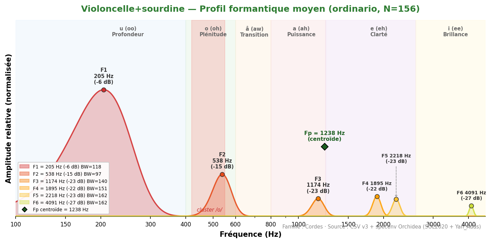
◆ Fp (centroïde) = 1238 Hz
| Technique | N | F1 | F2 | F3 | F4 | F5 | F6 |
|---|---|---|---|---|---|---|---|
| non_vibrato | 144 | 194 | 506 | 1 034 | 1 776 | 2 110 | 2 939 |
| ↳ σ / [Q25–Q75] | σ=54 [183–258] IQR=75 | σ=209 [463–614] IQR=151 | σ=400 [840–1217] IQR=377 | σ=630 | σ=944 | σ=1559 | |
| ordinario | 156 | 205 | 538 | 1 174 | 1 895 | 2 218 | 4 091 |
| ↳ σ / [Q25–Q75] | σ=262 [194–280] IQR=86 | σ=630 [484–1109] IQR=624 | σ=826 [883–2110] IQR=1227 | σ=1032 | σ=1226 | σ=1576 | |
| tremolo | 52 | 215 | 517 | 1 098 | 1 540 | 2 067 | 2 939 |
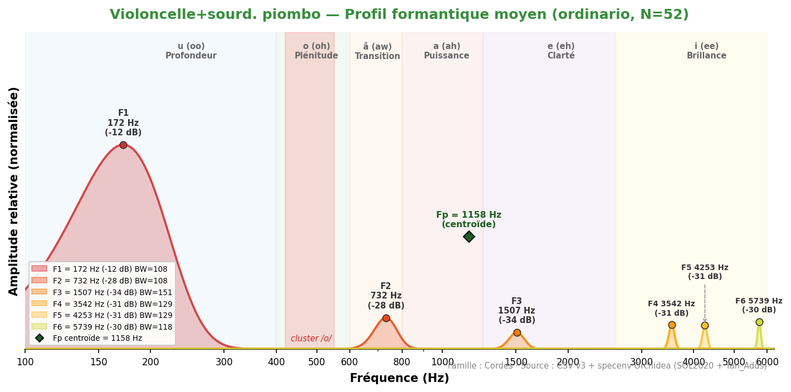
◆ Fp (centroïde) = 1158 Hz
| Technique | N | F1 | F2 | F3 | F4 | F5 | F6 |
|---|---|---|---|---|---|---|---|
| non_vibrato | 45 | 172 | 581 | 1 044 | 2 358 | 3 941 | 5 760 |
| ↳ σ / [Q25–Q75] | σ=80 [151–269] IQR=118 | σ=401 [463–732] IQR=269 | σ=861 [883–1518] IQR=635 | σ=1053 | σ=1226 | σ=804 | |
| ordinario | 52 | 172 | 732 | 1 507 | 3 542 | 4 253 | 5 739 |
| ↳ σ / [Q25–Q75] | σ=165 [162–280] IQR=118 | σ=998 [484–1776] IQR=1292 | σ=1217 [958–3316] IQR=2358 | σ=1302 | σ=1212 | σ=1000 | |
| tremolo | 52 | 194 | 603 | 1 044 | 1 733 | 2 509 | 4 619 |
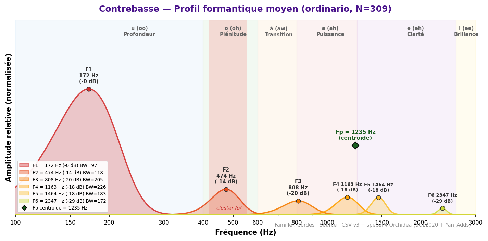
◆ Fp (centroïde) = 1235 Hz
| Registre | N | Notes | F1 Hz | dB | F2 Hz | dB | F3 Hz | dB | F4 Hz | dB | F5 Hz | dB | F6 Hz | dB | F7 Hz | dB | Fp Hz |
|---|---|---|---|---|---|---|---|---|---|---|---|---|---|---|---|---|---|
| Grave | 39 | E1-C2 | 161 | 12.6 | 452 | -4.8 | 1260 | -10.2 | — | — | — | — | — | — | — | — | 1283 |
| Médium | 129 | C2-C3 | 161 | 4.8 | 463 | -10.4 | 786 | -16.4 | 1109 | -15.5 | 1432 | -16.3 | — | — | — | — | 1302 |
| Aigu | 117 | C3-C4 | 172 | -3.9 | 474 | -17.3 | 818 | -22.0 | 1152 | -19.1 | 1443 | -18.7 | 1787 | -27.6 | — | — | 1335 |
| Suraigu | 48 | C4-C5 | 237 | -13.5 | 538 | -22.7 | 872 | -23.9 | 1163 | -23.2 | 1443 | -21.2 | 2379 | -30.6 | 2713 | -30.1 | 1385 |
| GLOBAL | 333 | E1-C5 | 172 | -0.3 | 474 | -14.2 | 818 | -19.7 | 1141 | -17.6 | 1432 | -17.5 | — | — | — | — | 1323 |
Grave
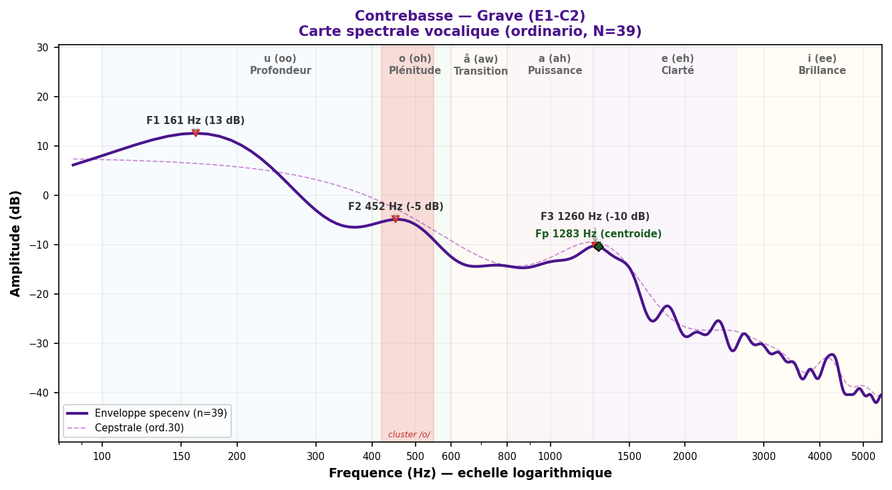
Médium
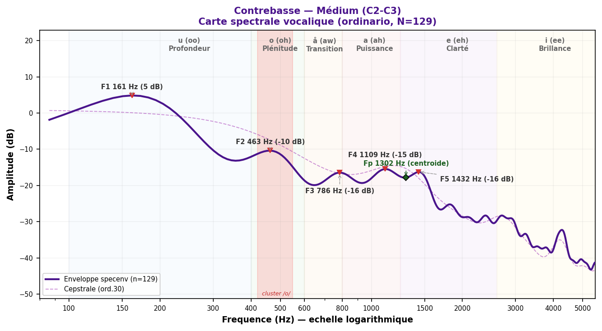
Aigu
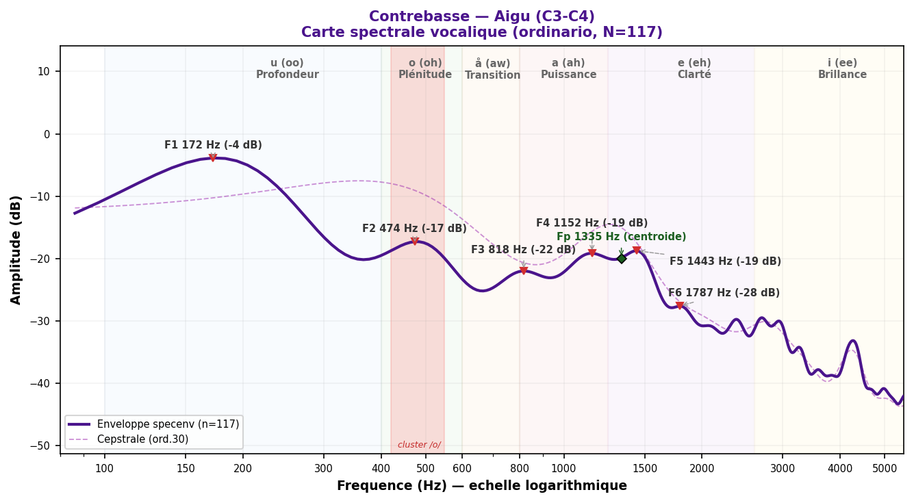
Suraigu
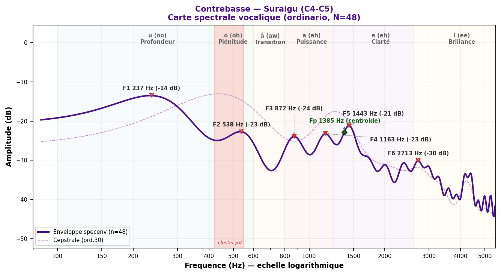
Global (toute la tessiture)
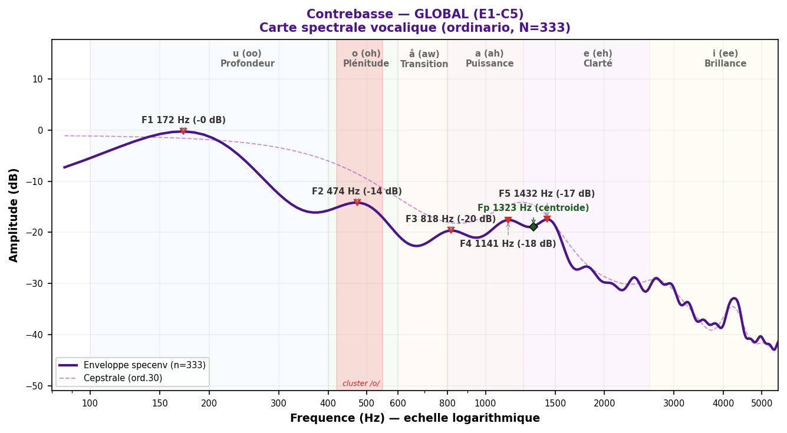
| Source | F1 (Hz) | F2 (Hz) | F3 (Hz) | F4 (Hz) | Voyelle | N | Accord |
|---|---|---|---|---|---|---|---|
| Giesler (1985) | 70–250 | 400 (secondaire) | — | — | u/o | — | ~ |
| SOL2020 (autre pipeline) | 200 ±169 | 593 ±312 | 1 200 | — | u (oo) | 41 | note |
| Pipeline v22 | 172 | 474 | — | — | u (oo) | 297 | réf. |
| Technique | N | F1 | F2 | F3 | F4 | F5 | F6 |
|---|---|---|---|---|---|---|---|
| artificial_harmonic | 49 | 183 | 538 | 948 | 1 324 | 1 755 | 2 681 |
| artificial_harmonic_tremolo | 46 | 162 | 517 | 915 | 1 303 | 1 723 | 2 541 |
| behind_the_bridge | 4 | 764 | 1 184 | 2 347 | 3 305 | 4 059 | 5 792 |
| chromatic_scale | 2 | 172 | 484 | 818 | 1 152 | 1 518 | — |
| col_legno_battuto | 55 | 140 | 474 | 1 001 | 1 389 | 1 841 | 2 229 |
| col_legno_tratto | 55 | 162 | 484 | 829 | 1 141 | 1 432 | 1 960 |
| crescendo | 36 | 183 | 506 | 980 | 1 270 | 1 540 | 2 412 |
| crescendo_to_decrescendo | 52 | 172 | 495 | 1 012 | 1 324 | 1 615 | 2 509 |
| crushed_to_ordinario | 48 | 183 | 474 | 861 | 1 206 | 1 518 | 1 895 |
| ↳ σ / [Q25–Q75] | σ=14 [172–183] IQR=11 | σ=128 [463–517] IQR=54 | σ=173 [775–1012] IQR=237 | σ=160 | σ=349 | σ=426 | |
| decrescendo | 36 | 183 | 495 | 872 | 1 238 | 1 540 | 2 110 |
| hit_on_body | 5 | 215 | 958 | 1 324 | 1 561 | — | — |
| natural_harmonics_glissandi | 24 | 194 | 495 | 948 | 1 378 | 1 712 | 2 649 |
| non_vibrato | 297 | 172 | 474 | 829 | 1 163 | 1 475 | 2 240 |
| ↳ σ / [Q25–Q75] | σ=35 [162–183] IQR=22 | σ=90 [452–506] IQR=54 | σ=134 [775–958] IQR=183 | σ=172 | σ=320 | σ=576 | |
| note_lasting | 40 | 172 | 495 | 990 | 1 249 | 1 497 | 1 895 |
| on_the_bridge | 1 | 172 | 474 | 775 | 1 163 | 1 507 | — |
| on_the_tailpiece | 1 | 129 | 560 | 894 | 1 529 | 2 412 | — |
| on_the_tuning_pegs | 4 | 258 | 592 | 1 174 | 1 486 | 1 776 | 2 401 |
| ordinario | 309 | 172 | 474 | 808 | 1 163 | 1 464 | 2 347 |
| ↳ σ / [Q25–Q75] | σ=36 [162–183] IQR=22 | σ=89 [452–506] IQR=54 | σ=140 [775–926] IQR=151 | σ=169 | σ=336 | σ=560 | |
| ordinario_to_crushed | 36 | 183 | 484 | 883 | 1 195 | 1 454 | 1 863 |
| ↳ σ / [Q25–Q75] | σ=16 [172–194] IQR=22 | σ=94 [474–528] IQR=54 | σ=174 [786–1066] IQR=280 | σ=246 | σ=413 | σ=487 | |
| ordinario_to_sul_ponticello | 43 | 172 | 484 | 926 | 1 238 | 1 507 | 2 089 |
| ↳ σ / [Q25–Q75] | σ=25 [172–183] IQR=11 | σ=114 [463–528] IQR=65 | σ=155 [808–1055] IQR=248 | σ=165 | σ=308 | σ=487 | |
| ordinario_to_sul_tasto | 46 | 172 | 484 | 840 | 1 184 | 1 486 | 1 906 |
| ↳ σ / [Q25–Q75] | σ=37 [162–183] IQR=22 | σ=96 [452–517] IQR=65 | σ=134 [786–948] IQR=162 | σ=131 | σ=253 | σ=401 | |
| ordinario_to_tremolo | 36 | 183 | 484 | 958 | 1 270 | 1 583 | 2 056 |
| ↳ σ / [Q25–Q75] | σ=32 [183–194] IQR=11 | σ=114 [463–517] IQR=54 | σ=165 [829–1087] IQR=258 | σ=173 | σ=267 | σ=329 | |
| pizzicato_bartok | 54 | 205 | 624 | 1 001 | 1 464 | 1 906 | 2 326 |
| pizzicato_l_vib | 165 | 151 | 463 | 872 | 1 184 | 1 486 | 1 873 |
| pizzicato_secco | 165 | 151 | 463 | 851 | 1 217 | 1 518 | 2 261 |
| sforzato | 72 | 183 | 474 | 872 | 1 206 | 1 507 | 1 852 |
| staccato | 52 | 172 | 463 | 872 | 1 217 | 1 540 | 1 841 |
| sul_ponticello | 76 | 183 | 474 | 840 | 1 163 | 1 475 | 2 164 |
| sul_ponticello_to_ordinario | 40 | 183 | 506 | 915 | 1 227 | 1 529 | 2 390 |
| ↳ σ / [Q25–Q75] | σ=29 [172–194] IQR=22 | σ=83 [474–549] IQR=75 | σ=158 [829–1109] IQR=280 | σ=170 | σ=329 | σ=376 | |
| sul_ponticello_to_sul_tasto | 46 | 183 | 474 | 829 | 1 152 | 1 486 | 1 852 |
| sul_ponticello_tremolo | 75 | 172 | 484 | 829 | 1 141 | 1 464 | 2 024 |
| sul_tasto | 73 | 172 | 474 | 808 | 1 141 | 1 464 | 1 906 |
| sul_tasto_to_ordinario | 43 | 172 | 506 | 948 | 1 238 | 1 529 | 2 519 |
| ↳ σ / [Q25–Q75] | σ=39 [162–183] IQR=22 | σ=153 [474–581] IQR=108 | σ=162 [808–1120] IQR=312 | σ=162 | σ=348 | σ=522 | |
| sul_tasto_to_sul_ponticello | 43 | 172 | 495 | 894 | 1 206 | 1 507 | 2 078 |
| sul_tasto_tremolo | 75 | 172 | 463 | 797 | 1 152 | 1 464 | 2 046 |
| tremolo | 228 | 183 | 474 | 808 | 1 141 | 1 464 | 1 873 |
| tremolo_to_ordinario | 36 | 183 | 484 | 829 | 1 163 | 1 550 | 1 895 |
| ↳ σ / [Q25–Q75] | σ=31 [172–205] IQR=32 | σ=126 [463–528] IQR=65 | σ=159 [786–990] IQR=204 | σ=160 | σ=185 | σ=388 | |
| trill_major_second_up | 54 | 172 | 474 | 818 | 1 141 | 1 454 | 2 282 |
| trill_minor_second_up | 54 | 172 | 474 | 818 | 1 141 | 1 464 | 1 863 |
| Instrument associé | F1 (instrument) | F1 (associé) | Écart | Qualité | Rapport de tessiture | Commentaire |
|---|---|---|---|---|---|---|
| Tuba basse | 172 | 226 | Δ=54 Hz | Excellente | Unisson | Fondation grave cordes-cuivres — Δ=54 Hz |
| Contrebasson | 172 | 226 | Δ=54 Hz | Excellente | Unisson | Fondation grave cordes-bois — Δ=54 Hz |
| Clarinette contrebasse | 172 | 323 | Δ=151 Hz | Bonne | Octave | Cl. contrebasse sonne une octave au-dessus |
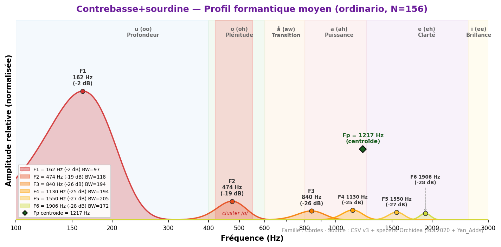
◆ Fp (centroïde) = 1217 Hz
| Technique | N | F1 | F2 | F3 | F4 | F5 | F6 |
|---|---|---|---|---|---|---|---|
| non_vibrato | 143 | 172 | 474 | 840 | 1 163 | 1 561 | 1 938 |
| ↳ σ / [Q25–Q75] | σ=42 [151–183] IQR=32 | σ=156 [452–538] IQR=86 | σ=177 [764–1034] IQR=269 | σ=235 | σ=269 | σ=663 | |
| ordinario | 156 | 162 | 474 | 840 | 1 130 | 1 550 | 1 906 |
| ↳ σ / [Q25–Q75] | σ=46 [151–183] IQR=32 | σ=131 [452–549] IQR=97 | σ=172 [754–1044] IQR=291 | σ=226 | σ=264 | σ=671 | |
| tremolo | 52 | 183 | 474 | 840 | 1 098 | 1 540 | 2 067 |
Les données d'ensemble montrent un effet de section (compression formantique) systématique : le F1 collectif est significativement plus haut que le F1 du soliste. Exemple le plus marqué : Violon solo F1=506 Hz → Ensemble de violons F1=495 Hz (Δ=−2 %), mais F2 passe de 1 518 à 1 163 Hz (−23 %) — l'effet de section lisse F2–F3, pas F1.
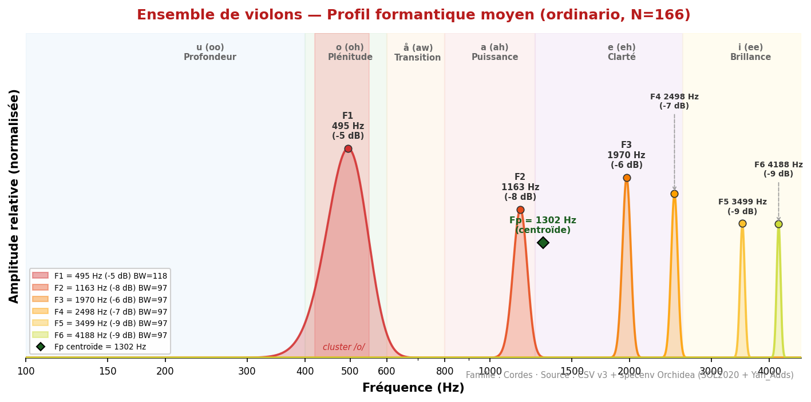
◆ Fp (centroïde) = 1302 Hz
| Registre | N | Notes | F1 Hz | dB | F2 Hz | dB | F3 Hz | dB | F4 Hz | dB | F5 Hz | dB | F6 Hz | dB | F7 Hz | dB | Fp Hz |
|---|---|---|---|---|---|---|---|---|---|---|---|---|---|---|---|---|---|
| Grave | 21 | G3-C4 | 484 | 3.3 | 915 | -2.4 | 1604 | -2.6 | 2143 | -0.3 | 2476 | -2.3 | 2810 | -3.3 | 3165 | -3.9 | 969 |
| Médium | 52 | C4-C5 | 345 | 2.4 | 528 | -1.7 | 904 | -2.2 | 2013 | -3.3 | 2196 | -3.2 | 2509 | -3.4 | 3122 | -4.9 | 954 |
| Aigu | 52 | C5-C6 | 355 | -5.9 | 571 | -3.5 | 915 | -6.6 | 2175 | -8.0 | 2789 | -9.2 | 3112 | -9.1 | 4134 | -8.9 | 898 |
| Suraigu | 53 | C6-C#7 | 377 | -7.6 | 560 | -8.3 | 915 | -6.9 | 1130 | -5.3 | 1443 | -8.4 | 2046 | -7.0 | 2153 | -6.9 | 1041 |
| GLOBAL | 178 | G3-C#7 | 366 | -3.4 | 549 | -4.0 | 904 | -4.9 | 2035 | -5.7 | 2175 | -5.4 | 2509 | -7.0 | 3133 | -7.3 | 968 |
Grave
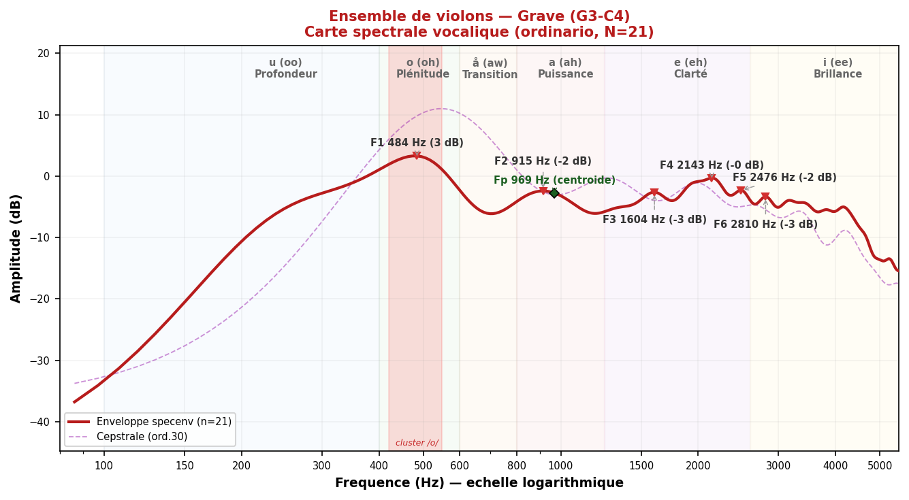
Médium
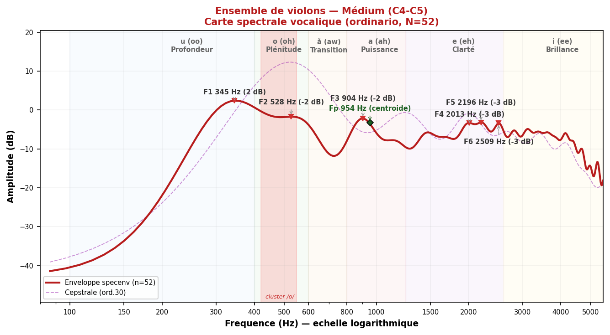
Aigu
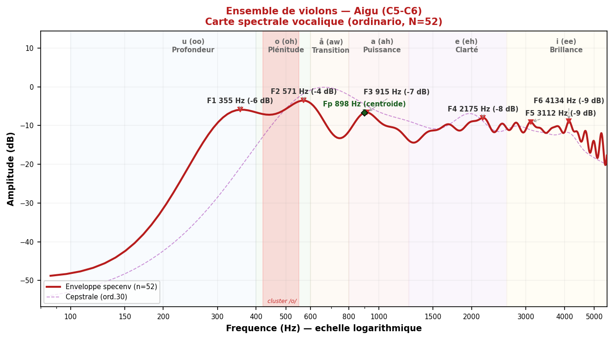
Suraigu
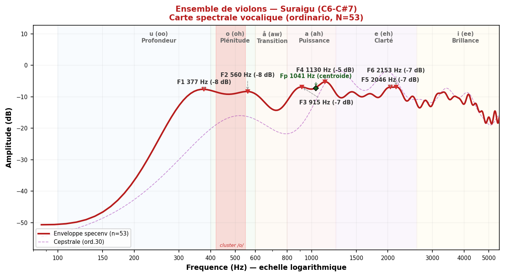
Global (toute la tessiture)
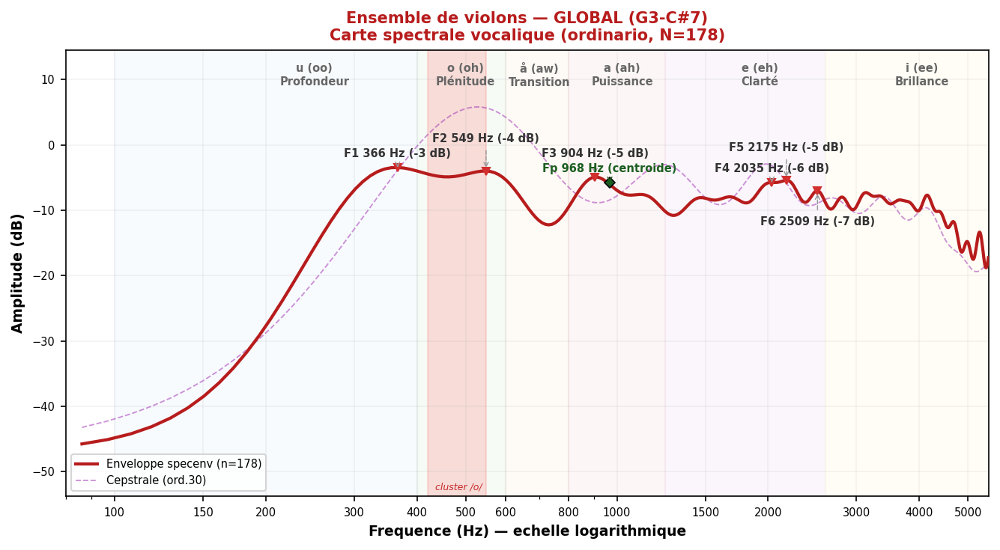
| Source | F1 (Hz) | F2 (Hz) | F3 (Hz) | F4 (Hz) | Voyelle | N | Accord |
|---|---|---|---|---|---|---|---|
| SOL2020 (N=166) | 495 ±89 | 1 163 ±312 | 1 970 ±389 | — | o (oh) | 166 | — |
| Technique | N | F1 | F2 | F3 | F4 | F5 | F6 |
|---|---|---|---|---|---|---|---|
| flautando | 21 | 484 | 883 | 1 314 | 1 895 | 2 950 | 3 973 |
| ordinario | 166 | 495 | 1 163 | 1 970 | 2 498 | 3 499 | 4 188 |
| ↳ σ / [Q25–Q75] | σ=423 [388–894] IQR=506 | σ=731 [915–1863] IQR=947 | σ=889 [1486–2498] IQR=1012 | σ=851 | σ=939 | σ=1152 | |
| pizzicato-l-vib | 126 | 344 | 603 | 1 087 | 1 658 | 2 293 | 3 165 |
| Instrument associé | F1 (instrument) | F1 (associé) | Écart | Qualité | Rapport de tessiture | Commentaire |
|---|---|---|---|---|---|---|
| Hautbois | 495 | 743 (F1) | Δ=248 Hz | Complémentaire | Unisson | F1 ens. violons proche de /o/, hautbois en /å/ — complémentarité |
| Flûte | 495 | 743 | Δ=248 Hz | Complémentaire | Unisson | Zone /o/–/å/ partagée |
| Violoncelle | 495 | 205 | Δ=290 Hz | Complémentaire | Octave | Complémentarité /o/–/u/ violons+violoncelles |
| Clarinette Sib | 495 | 463 | Δ=32 Hz | Excellente | Unisson | Convergence /o/ — fusion cordes-bois |
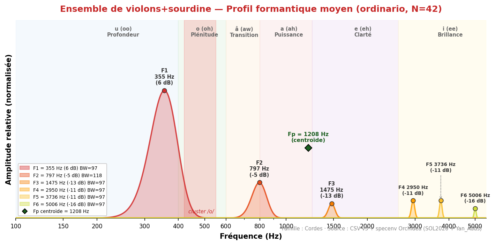
◆ Fp (centroïde) = 1208 Hz
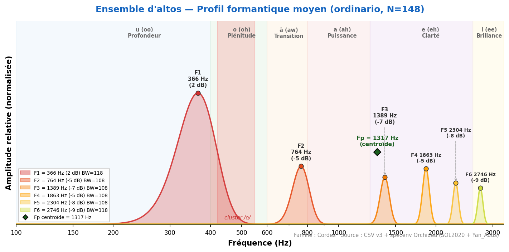
◆ Fp (centroïde) = 1317 Hz
| Registre | N | Notes | F1 Hz | dB | F2 Hz | dB | F3 Hz | dB | F4 Hz | dB | F5 Hz | dB | F6 Hz | dB | F7 Hz | dB | Fp Hz |
|---|---|---|---|---|---|---|---|---|---|---|---|---|---|---|---|---|---|
| Grave | 28 | C#3-G3 | 355 | 8.6 | 732 | 1.6 | 1055 | -0.9 | 1324 | 0.8 | 1604 | -1.4 | 1873 | -0.2 | 2153 | -2.7 | 998 |
| Médium | 52 | G3-G4 | 312 | 7.1 | 700 | -3.7 | 1098 | -5.6 | 1400 | -5.0 | 1906 | -3.3 | 2218 | -5.1 | 2455 | -5.9 | 978 |
| Aigu | 52 | G4-G5 | 366 | 0.1 | 754 | -6.9 | 1227 | -9.6 | 1378 | -9.5 | 1970 | -7.3 | 2218 | -8.1 | 2810 | -10.0 | 949 |
| Suraigu | 28 | G5-C#6 | 334 | -4.1 | 829 | -1.0 | 1690 | -6.5 | 1927 | -6.7 | 2196 | -7.9 | 3068 | -10.3 | 3295 | -9.6 | 876 |
| GLOBAL | 160 | C#3-C#6 | 334 | 2.8 | 743 | -4.2 | 1098 | -7.3 | 1389 | -7.0 | 1626 | -7.1 | 1916 | -4.9 | 2196 | -6.2 | 947 |
Grave
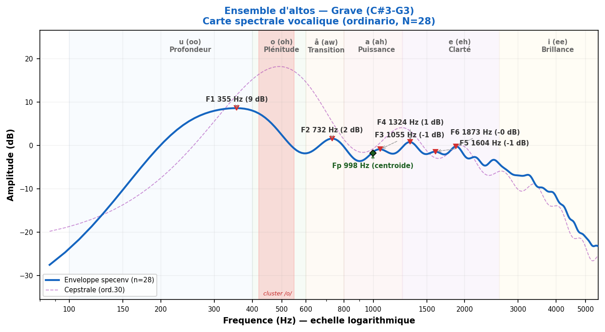
Médium
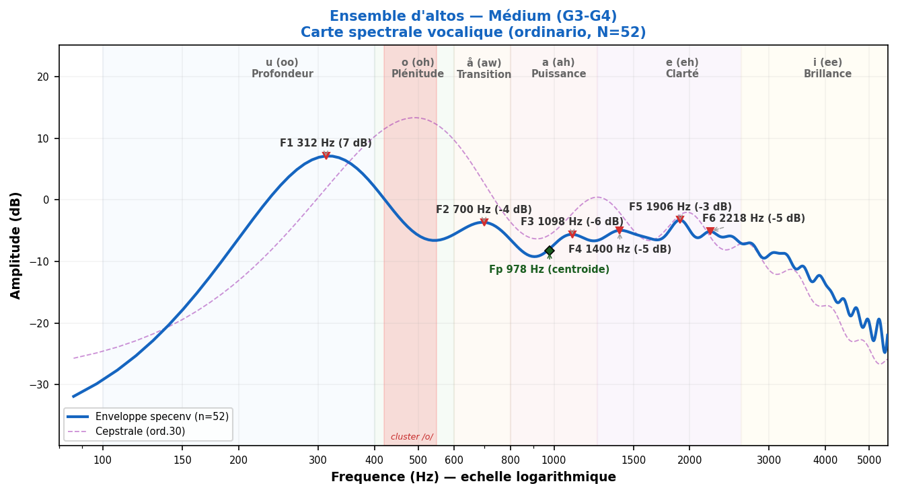
Aigu
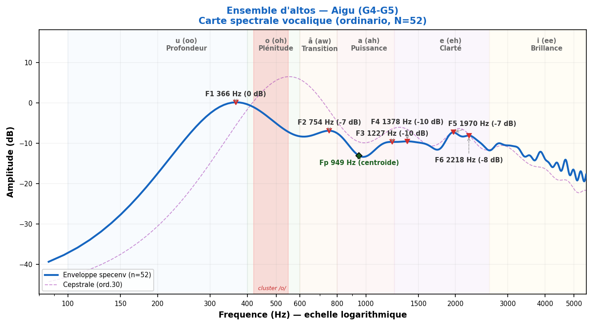
Suraigu
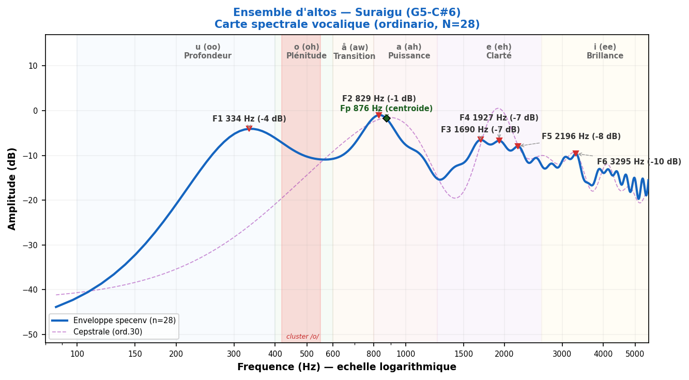
Global (toute la tessiture)
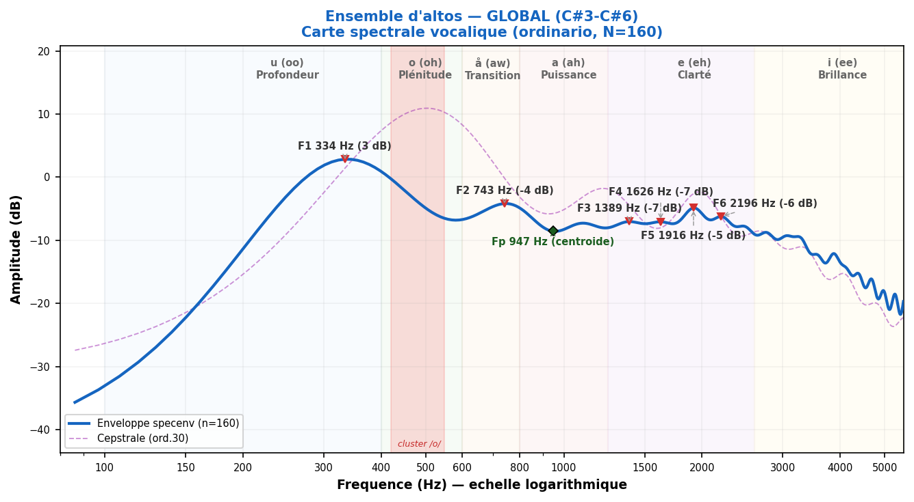
| Source | F1 (Hz) | F2 (Hz) | F3 (Hz) | F4 (Hz) | Voyelle | N | Accord |
|---|---|---|---|---|---|---|---|
| SOL2020 (N=148) | 366 ±62 | 764 ±198 | 1 389 ±287 | — | å/o | 148 | — |
| Technique | N | F1 | F2 | F3 | F4 | F5 | F6 |
|---|---|---|---|---|---|---|---|
| flautando | 19 | 377 | 732 | 1 109 | 1 680 | 2 089 | 2 379 |
| ordinario | 148 | 366 | 764 | 1 389 | 1 863 | 2 304 | 2 746 |
| ↳ σ / [Q25–Q75] | σ=260 [312–571] IQR=258 | σ=432 [711–1314] IQR=603 | σ=578 [1044–1970] IQR=926 | σ=768 | σ=979 | σ=1201 | |
| pizzicato-l-vib | 74 | 280 | 657 | 1 055 | 1 550 | 1 960 | 2 649 |
| Instrument associé | F1 (instrument) | F1 (associé) | Écart | Qualité | Rapport de tessiture | Commentaire |
|---|---|---|---|---|---|---|
| Cor anglais | 366 | 452 | Δ=86 Hz | Bonne | Unisson | Zone /o/–/å/ — couleur mélancolique partagée |
| Clarinette Sib | 366 | 463 | Δ=97 Hz | Bonne | Unisson | Zone /o/–/å/ — fondu section médium |
| Cor | 366 | 388 | Δ=22 Hz | Excellente | Unisson | Convergence /o/–/å/ — couleur sombre commune |
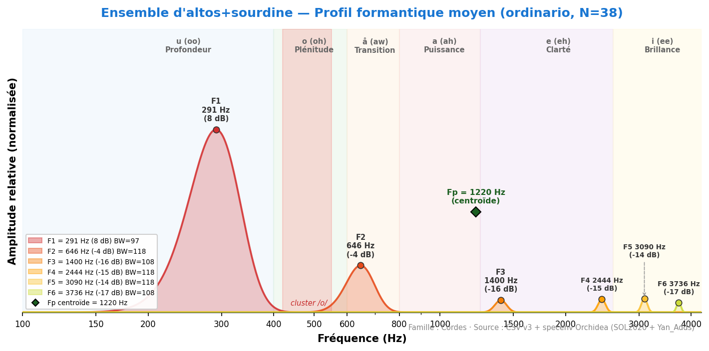
◆ Fp (centroïde) = 1220 Hz
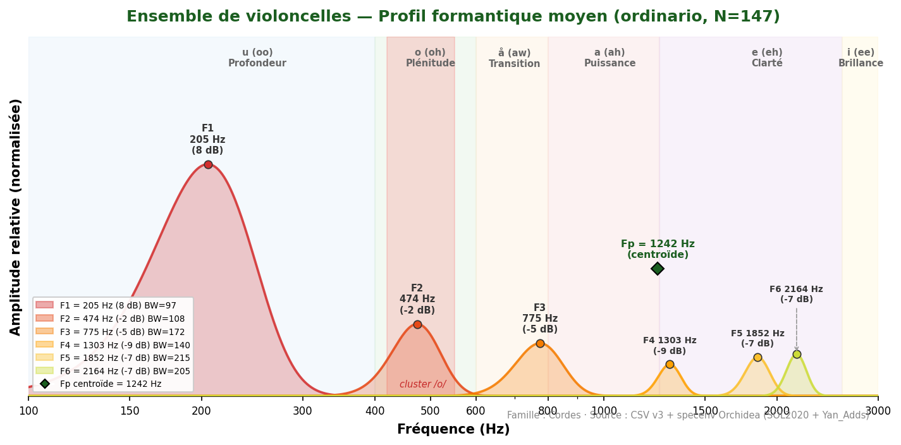
◆ Fp (centroïde) = 1242 Hz
| Registre | N | Notes | F1 Hz | dB | F2 Hz | dB | F3 Hz | dB | F4 Hz | dB | F5 Hz | dB | F6 Hz | dB | F7 Hz | dB | Fp Hz |
|---|---|---|---|---|---|---|---|---|---|---|---|---|---|---|---|---|---|
| Grave | 28 | C#2-G2 | 194 | 18.4 | 441 | 4.4 | 743 | 3.1 | 1012 | -1.1 | 1270 | -4.9 | 1820 | -4.6 | 2132 | -5.0 | 1414 |
| Médium | 52 | G2-G3 | 194 | 12.4 | 452 | -1.0 | 754 | -2.1 | 1023 | -3.9 | 1270 | -6.9 | 1841 | -5.9 | 2143 | -6.2 | 1446 |
| Aigu | 52 | G3-G4 | 237 | 5.3 | 721 | -7.5 | 1055 | -9.0 | 1572 | -9.8 | 1873 | -7.9 | 2186 | -8.2 | 2390 | -9.6 | 1529 |
| Suraigu | 27 | G4-C#5 | 205 | -1.0 | 452 | 3.6 | 840 | -6.2 | 1604 | -6.3 | 2143 | -8.0 | 3241 | -7.5 | 3542 | -8.5 | 1507 |
| GLOBAL | 159 | C#2-C#5 | 215 | 8.4 | 441 | -1.5 | 764 | -4.3 | 1023 | -6.0 | 1593 | -7.5 | 1863 | -7.3 | 2153 | -7.1 | 1476 |
Grave
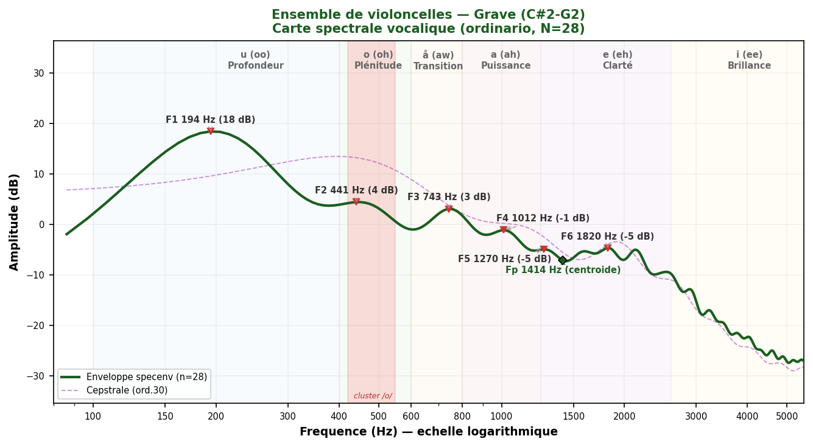
Médium
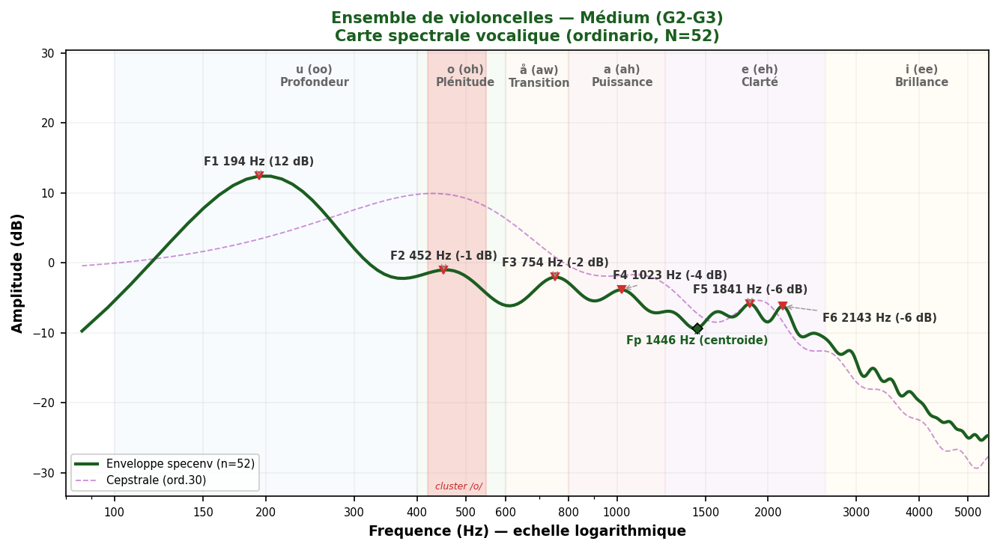
Aigu
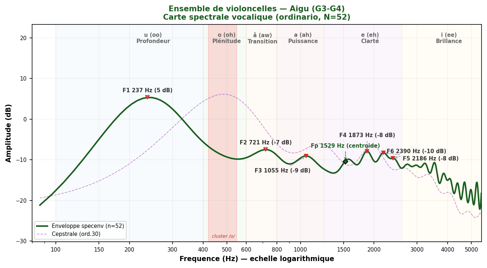
Suraigu
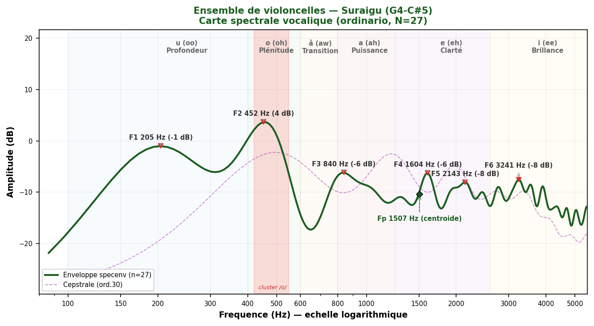
Global (toute la tessiture)
| Source | F1 (Hz) | F2 (Hz) | F3 (Hz) | F4 (Hz) | Voyelle | N | Accord |
|---|---|---|---|---|---|---|---|
| SOL2020 (N=147) | 205 ±48 | 474 ±156 | 775 ±201 | — | u (oo) | 147 | — |
| Technique | N | F1 | F2 | F3 | F4 | F5 | F6 |
|---|---|---|---|---|---|---|---|
| flautando | 19 | 205 | 463 | 754 | 1 012 | 1 647 | 1 895 |
| ordinario | 147 | 205 | 474 | 775 | 1 303 | 1 852 | 2 164 |
| ↳ σ / [Q25–Q75] | σ=149 [194–280] IQR=86 | σ=320 [452–743] IQR=291 | σ=446 [754–1055] IQR=301 | σ=529 | σ=557 | σ=598 | |
| pizzicato-l-vib | 111 | 194 | 484 | 818 | 1 260 | 1 809 | 2 347 |
| Instrument associé | F1 (instrument) | F1 (associé) | Écart | Qualité | Rapport de tessiture | Commentaire |
|---|---|---|---|---|---|---|
| Cor anglais | 205 | 452 | Δ=247 Hz | Complémentaire | Unisson | Complémentarité /u/–/o/ — couleur grave + chaud |
| Basson | 205 | 495 | Δ=290 Hz | Complémentaire | Octave | Fondation grave + zone /o/ basson |
| Cor | 205 | 388 | Δ=183 Hz | Bonne | Octave | Zone /u/–/o/ complémentaire |
◆ Fp (centroïde) = 1219 Hz
◆ Fp (centroïde) = 1175 Hz
⚠ Technique : non-vibrato uniquement dans la base.
| Registre | N | Notes | F1 Hz | dB | F2 Hz | dB | F3 Hz | dB | F4 Hz | dB | F5 Hz | dB | F6 Hz | dB | F7 Hz | dB | Fp Hz |
|---|---|---|---|---|---|---|---|---|---|---|---|---|---|---|---|---|---|
| Grave | 26 | C1-C2 | 161 | 19.2 | 431 | 4.3 | — | — | — | — | — | — | — | — | — | — | 1112 |
| Médium | 26 | C2-C3 | 172 | 11.6 | 441 | 0.3 | 743 | -7.5 | 1023 | -5.9 | 1292 | -7.5 | 1529 | -10.3 | — | — | 1155 |
| Aigu | 26 | C3-C4 | 194 | 8.2 | 452 | -3.7 | 764 | -8.5 | 1023 | -6.0 | 1303 | -7.6 | 1550 | -9.3 | 1852 | -11.6 | 1176 |
| Suraigu | 2 | C4-C4 | 194 | 8.6 | 463 | -4.3 | 775 | -11.0 | 1034 | -7.6 | 1314 | -8.7 | 1572 | -10.2 | 1852 | -11.2 | 1191 |
| GLOBAL | 80 | C1-C4 | 183 | 12.7 | 441 | 0.1 | 743 | -7.6 | 1023 | -6.3 | 1281 | -8.1 | 1540 | -11.0 | — | — | 1147 |
Grave
Médium
Aigu
Suraigu
Global (toute la tessiture)
| Source | F1 (Hz) | F2 (Hz) | F3 (Hz) | F4 (Hz) | Voyelle | N | Accord |
|---|---|---|---|---|---|---|---|
| SOL2020 (non-vibrato, N=76) | 172 ±44 | 441 ±112 | 754 ±189 | — | u (oo) | 76 | — |
| Technique | N | F1 | F2 | F3 | F4 | F5 | F6 |
|---|---|---|---|---|---|---|---|
| flautando | 19 | 162 | 452 | 948 | 1 023 | 1 324 | 1 561 |
| non-vibrato | 76 | 172 | 441 | 754 | 1 023 | 1 292 | 1 550 |
| ↳ σ / [Q25–Q75] | σ=15 [162–183] IQR=22 | σ=131 [431–452] IQR=22 | σ=146 [732–775] IQR=43 | σ=92 | σ=99 | σ=106 | |
| pizzicato-l-vib | 114 | 162 | 441 | 764 | 1 034 | — | — |
| Instrument associé | F1 (instrument) | F1 (associé) | Écart | Qualité | Rapport de tessiture | Commentaire |
|---|---|---|---|---|---|---|
| Tuba basse | 172 | 226 | Δ=54 Hz | Excellente | Unisson | Fondation grave sections — Δ=54 Hz |
| Contrebasson | 172 | 226 | Δ=54 Hz | Excellente | Unisson | Bois + cordes graves — Δ=54 Hz |
| Tuba contrebasse | 172 | 226 | Δ=54 Hz | Excellente | Unisson | Tuba CB F1=226 Hz — convergence /u/ |
Source : formants_all_techniques.csv (SOL2020) + formants_yan_adds.csv · pipeline v22.
Références : Backus (1969) · Giesler (1985) · Meyer (2009).